Children’s literature, literacy and education
Picturebook Reading List
Browse by theme to find books to share at home, in classrooms or in reading groups. Each entry gives the publication details I could verify and links to publishers, reading guides or UK booksellers where available. Check the retailer’s edition and availability before ordering.
This is a selective, non-exhaustive reading list. Books are grouped by theme and arranged within each theme by publication year, newest first; titles with unverified years appear after dated titles.
If you would like your book to be considered for inclusion in my reading lists, please contact me and, if possible, send me a review copy. Inclusion is subject to editorial selection.

384 book entries
Country labels refer to the original work’s publication. Story settings and creator connections are shown separately; some works were co-published in several countries.
Explore creators in the Authors and Illustrators directories.
Disability
These books explore disabled childhoods, accessibility and participation. For picturebooks exploring related experiences, see the Neurodivergence and Mental health sections below.

What Happened to You?
James Catchpole · Karen George
· London: Faber & Faber
United Kingdom
A child with one leg wants to play while other children ask about his body.
Schneider Family Book Award 2024 — Young Children honour · Award record
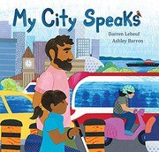
My City Speaks
Darren Lebeuf · Ashley Barron
· Toronto, Ontario: Kids Can Press
Canada
A girl who is visually impaired explores the city through sound, touch and movement.
Schneider Family Book Award 2022 — Young Children winner · Award record

My Three Best Friends and Me, Zulay
Cari Best · Vanessa Brantley-Newton
· New York: Margaret Ferguson Books / Farrar, Straus and Giroux
United States
Zulay prepares to run in her school’s field day.

Susan Laughs
Jeanne Willis · Tony Ross
paperback edition · Andersen Press · ISBN 9781842709900 (first published 1999)
United Kingdom
Everyday scenes introduce Susan before the final image reveals her wheelchair.
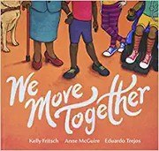
We Move Together
Kelly Fritsch and Anne McGuire · Eduardo Trejos
· Chico, California: AK Press
United States
A story about access, solidarity and finding ways to move together.

You Are Enough: A Book About Inclusion
Margaret O’Hair and Sofia Sanchez · Sofia Cardoso
· New York: Scholastic Inc.
United States
Children with different bodies, abilities and ways of participating appear together in an affirmation of belonging. Use the illustrations to discuss concrete access and friendship, rather than letting a general message of acceptance stand in for practical inclusion.
An illustrated celebration of belonging and difference.

Just Ask! Be Different, Be Brave, Be You
Sonia Sotomayor · Rafael López
· New York: Philomel Books
United States
Children introduce different ways of experiencing and participating in the world.
Schneider Family Book Award 2020 — Young Children winner · Award record
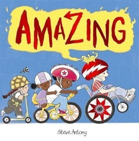
Amazing
Steve Antony
· London: Hodder Children’s Books
United Kingdom
A wheelchair user and his pet dragon have adventures together in a story where disability is part of everyday life.

We’re All Wonders
R. J. Palacio
· New York: Alfred A. Knopf
United States
Auggie narrates what it feels like to be stared at and invites readers to consider how they see others.

I Am Not a Label: 34 Disabled Artists, Thinkers, Athletes and Activists from Past and Present
Cerrie Burnell · Lauren Mark Baldo
· Wide Eyed Editions
United Kingdom
An illustrated collection that gives readers several different starting points for exploring disabled lives and achievements.
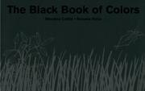
The Black Book of Colors / El libro negro de los colores
Menena Cottin · Rosana Faría (illustrator) · Elisa Amado (English translator)
Mexico
Raised illustrations and braille invite readers to explore how colour can be described through touch and other senses.
Spanish original: El libro negro de los colores · 2006 · Ediciones Tecolote
English translation: The Black Book of Colors · 2008 · Groundwood Books · translated by Elisa Amado
 Spanish original cover
Spanish original cover
Elephant Man
Written by Mariangela Di Fiore; illustrated by Hilde Hodnefjeld; translated into English by Rosie Hedger
· Annick Press · English hardcover edition · ISBN 9781554517787
Norway
A translated picturebook biography of Joseph Merrick, exploring the gaze and treatment he encountered. Compare how words and pictures present his agency, and contextualise the dehumanising historical label used in the title.
English translation of Elefantmannen, a personal favourite.
English edition details · My article on Elefantmannen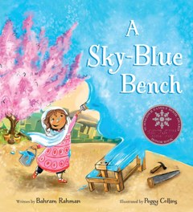
A Sky-Blue Bench
Bahram Rahman; illustrated by Peggy Collins
2021 · Pajama Press · ISBN 9781772782226
Canada
In Afghanistan, Aria sets out to make a bench that will let her sit comfortably in school with her prosthetic leg.
Edition and cover detailsSchneider Family Book Award 2022 — Young Children honour · Award record

Max the Champion
Written by Sean Stockdale and Alex Strick; illustrated by Ros Asquith
· Frances Lincoln Children’s Books (Quarto) · UK paperback · ISBN 9781847805195 · 32 pages
United Kingdom
Max imagines sporting glory throughout an ordinary school day. Illustrations show disabled and non-disabled children playing together.
Edition and cover details
Sam’s Super Seats
Keah Brown · Sharee Miller
2022 · Kokila
United States
Sam’s shopping trip with friends asks who can comfortably use public spaces. It makes room for fatigue, rest and fun.

You’re SO Amazing!
James Catchpole and Lucy Catchpole · Karen George
2023 · Faber
United Kingdom
Joe questions why everyday play attracts praise simply because he is disabled. Read alongside What Happened to You?
Schneider Family Book Award 2025 — Young Children honour · Award record

The Blind Fairy: A Tale
Brigitte Schär · illustrated by Julia Gukova
1998 · North-South Books · ISBN 1558589708
Switzerland
An illustrated fairy tale in which a fairy regains her sight. Read critically alongside contemporary books about blindness to discuss how the story connects sight with power.

Elefantmannen
Mariangela Di Fiore · Hilde Hodnefjeld
Norwegian original · 2013 · Cappelen Damm
Norway
Language of this edition: Norwegian
A picturebook biography of Joseph Merrick that attends to how he is looked at and treated by others. Read the historical setting and the pictures critically: the title reflects a dehumanising public label rather than the name by which a person should be reduced.
A personal favourite. English translation: Elephant Man

Mi lazarilla, mi capitán
Gonzalo Moure; illustrated by Maria Girón
Spanish · 2020 · Kalandraka · ISBN 9788413430317
Spain
Language of this edition: Spanish
A father and daughter navigate the city through sound and imagination. Traditional Chinese edition: 即使看不見，我們還是牽著手穩穩走 (ISBN 9789869990585).
Edition and cover details Traditional Chinese edition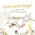
¡Qué suerte tengo!
Lawrence Schimel; illustrated by Juan Camilo Mayorga
2018 · Rey Naranjo Editores · Spanish-language hardback · ISBN 9789585622517 · 32 pages · 22 × 22 cm
Colombia
Language of this edition: Spanish
A boy reflects on everyday moments with his brother José and what makes their relationship special.
Publisher’s edition details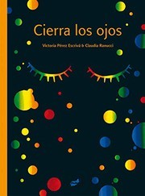
Cierra los ojos
Victoria Pérez Escrivá · illustrated by Claudia Ranucci
Spanish · 2020 edition · ISBN 9788416817764
Spain
Language of this edition: Spanish
Two brothers describe the same world in different ways. One brother is blind, and their exchanges invite readers to notice what sound, smell and touch can tell them.
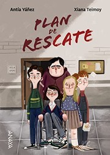
Plan de rescate
Antía Yáñez; illustrated by Xiana Teimoy
Spanish translation · Anaya Infantil y Juvenil · ISBN 9788414334607
Spain
Language of this edition: Spanish translation from Galician
An illustrated children’s novel about a group of friends who put a rescue plan into action.
Edition and cover detailsOriginally published in Galician by Xerais (2020), ISBN 9788491217282. Author’s bibliography

Rescue & Jessica: A Life-Changing Friendship
Jessica Kensky and Patrick Downes · Scott Magoon
· Candlewick Press · hardcover · ISBN 9780763696047
United States
A girl adapting to life as a double amputee develops a working partnership with a service dog. The story attends to training, trust and practical support, inviting discussion of a service animal’s role rather than treating the dog as a magical cure.
Schneider Family Book Award 2019 — Young Children winner · Award / selection record
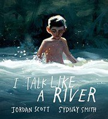
I Talk Like a River
Jordan Scott · Sydney Smith
ISBN 9781529502817
United States
A boy who stutters finds a different way to understand his speech during a visit to a river with his father. Changes in light and movement offer an image of speaking that resists measuring a voice only by fluency.
Story / creator connection: Canada
Schneider Family Book Award 2021 — Young Children winner · Award / selection record
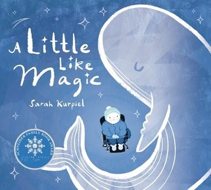
A Little Like Magic
Sarah Kurpiel
ISBN 9780593697658
United States
A wheelchair-using child visits an ice-sculpture festival, uncertain about the unfamiliar experience, then returns to search for a lost figurine. The changing winter light makes room for apprehension, curiosity and enjoyment without turning the child into a lesson for others.
Schneider Family Book Award 2025 — Young Children winner · Award / selection record

Dancing with Daddy
Anitra Rowe Schulte · Ziyue Chen
ISBN 9781542007191
United States
Elsie prepares for a dance with her father, with communication and mobility supports forming part of ordinary family life. Follow the anticipation and practical preparations rather than treating the event as a reward for becoming independent of support.
Dolly Gray Picture Book Award 2022 — winner · Award / selection record

More Than Words: So Many Ways to Say What We Mean
Roz Maclean
ISBN 9781250864505
United States
Nathan notices classmates communicating through speech, signs, movement and different tools. The accumulating examples invite readers to consider how to listen and make space for each person’s preferred way of expressing themselves.
IBBY Outstanding selection 2025 · Award / selection record

I Am, You Are
Ashley Harris Whaley · Ananya Rao-Middleton and Hannah Wood
ISBN 9780241573112
United Kingdom
An illustrated introduction presents disabled children’s identities, everyday experiences and access needs. Use its examples to ask about barriers and adjustments as well as difference, leaving room for people to choose the language they use about themselves.
IBBY Outstanding selection 2025 · Award / selection record

Splash
Claire Cashmore · illustrated by Sharon Davey
2021 · Farshore
United Kingdom
Inspired by the Paralympic swimmer’s childhood, this story follows a girl who is unsure about getting into the pool. Look at the choices and encouragement that help her join in at her own pace.

Stephen Hawking (Little Guides to Great Lives)
Isabel Thomas · illustrated by Marianna Madriz
2019 · Laurence King Publishing
United Kingdom
This short illustrated biography traces Hawking’s life and scientific work. Look at how the drawings explain his ideas and show the tools he used to communicate.
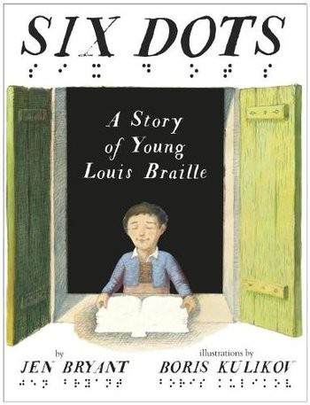
Six Dots: A Story of Young Louis Braille
Jen Bryant · Boris Kulikov
ISBN 9780449813379
United States
An illustrated biography follows Louis Braille’s search for a reading and writing system he could use independently. Discuss access to literacy and the work of invention; this print biography is not itself a braille edition.
Schneider Family Book Award 2017 — Young Children winner; IBBY Outstanding selection 2019 · Award / selection record
Itzhak: A Boy Who Loved the Violin
Tracy Newman · Abigail Halpin
ISBN 9781419741104
United States
A picturebook biography follows Itzhak Perlman’s childhood relationship with the violin. Attend to musical practice, family support and barriers to participation rather than reducing his work to a story of overcoming disability.
Schneider Family Book Award 2021 — Young Children honour · Award / selection record

Frida Kahlo (Little Guides to Great Lives)
Isabel Thomas · illustrated by Marianna Madriz
2018 · Laurence King Publishing
United Kingdom
This illustrated biography introduces Kahlo’s life and art. Discuss how the book connects her experiences of illness and injury with the choices she makes as an artist.

Piano Starts Here: The Young Art Tatum
Robert Andrew Parker
2016 paperback · Dragonfly Books
United States
The young jazz pianist Art Tatum describes music and the world around him. Notice how colour and line evoke his experience as a musician with low vision.
Emmanuel’s Dream: The True Story of Emmanuel Ofosu Yeboah
Laurie Ann Thompson · illustrated by Sean Qualls
· Schwartz & Wade / Anne Schwartz Books · hardcover · ISBN 9780449817445
United States
Emmanuel cycles across Ghana to challenge public attitudes to disability. Ask whose attitudes change and what makes that change possible.
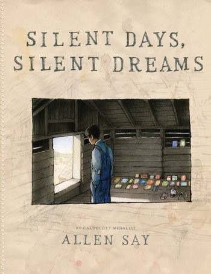
Silent Days, Silent Dreams
Allen Say
ISBN 9780545927611
United States
Say imagines scenes from the life of artist James Castle, who was deaf and worked outside formal art training. Distinguish documented biography from the author’s reconstruction and look closely at how the book represents Castle’s ways of communicating and making art.
Schneider Family Book Award 2018 — Young Children winner · Award / selection record
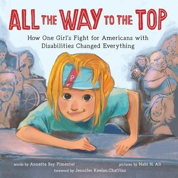
All the Way to the Top: How One Girl’s Fight for Americans with Disabilities Changed Everything
Annette Bay Pimentel · Nabi H. Ali
ISBN 9781492688976
United States
Jennifer Keelan’s participation in disability-rights activism gives a child’s viewpoint on the struggle for the Americans with Disabilities Act. Connect the dramatic Capitol Crawl with the sustained organising and demands for access that surrounded it.
Schneider Family Book Award 2021 — Young Children honour · Award / selection record

Borka: The Adventures of a Goose with No Feathers
First published 1963
A featherless goose struggles with expectations she cannot meet and finds help beyond her flock. Burningham’s textured pictures make the working harbour a setting for practical welcome rather than a demand to become the same as everyone else.

Diversity and Inclusion
Picturebooks about equality, children’s voices, inclusive communities and collective action across different experiences and identities.

Something Else
Kathryn Cave · illustrated by Chris Riddell
2011 edition · Puffin
United Kingdom
A creature who is excluded for being different must decide how to respond when a stranger comes to the door. This story opens up a discussion about who gets to decide what counts as belonging.

You Can!
Alexandra Strick · Steve Antony
2021 · Otter-Barry Books
United Kingdom
Follow the same children across life stages and look for the visual stories that run alongside the text.

We Can!: Make a Difference
Alexandra Strick · Steve Antony
2024 · Otter-Barry Books · ISBN 9781915659309
United Kingdom
A child-led festival makes room for accessible play and collective action.
Neurodivergence
Read about autistic and ADHD experiences, different ways of communicating and learning, and how sensory environments shape everyday life. Some books depict sensory experiences without naming a diagnosis.

A Friend for Henry
· San Francisco, California: Chronicle Books
United States
A classroom friendship told from the perspective of an autistic child.
Schneider Family Book Award 2020 — Young Children honour · Award record
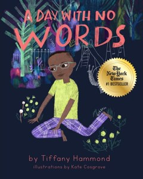
A Day with No Words
Tiffany Hammond · Kate Cosgrove
· New Egypt, New Jersey: Wheat Penny Press
United States
A family’s day out centres communication through an AAC device.
Dolly Gray Picture Book Award 2024 — winner · Award record
- Cover pending
My Brother Charlie
Holly Robinson Peete and Ryan Elizabeth Peete · Shane W. Evans
· New York: Scholastic Press
United States
A sister describes her relationship with her autistic twin brother.

The Girl Who Thought in Pictures: The Story of Dr. Temple Grandin
Julia Finley Mosca · Daniel Rieley
· Seattle, Washington: The Innovation Press
United States
An illustrated biography introducing Temple Grandin and her visual way of thinking.
Dolly Gray Picture Book Award 2018 — winner · Award record

The Abilities in Me: Autism
Gemma Keir · Adam Walker-Parker
· Independently published
United Kingdom · Publication record
A starting point for talking about autism and individual differences.

A Walk in the Words
Written and illustrated by Hudson Talbott
· Nancy Paulsen Books · hardcover · ISBN 9780399548710
United States
An autobiographical picturebook that uses changing typography to convey the experience of learning to read at one’s own pace.
Edition and cover detailsSchneider Family Book Award 2022 — Young Children honour · Award record

Pablo and the Noisy Party
Andrew Brenner and Sumita Majumdar
2020 · Ladybird
United Kingdom
Pablo and his imagined companions find ways to respond when a party becomes too loud.

Gina Kaminski Saves the Wolf
Craig Barr-Green · Francis Martin
2023 · Little Tiger
United Kingdom
An autistic child rewrites Little Red Riding Hood, using the picturebook to question who decides how a familiar tale ends.

Loud!
2021 · Scallywag Press
United Kingdom
Abigail’s restlessness takes on a new meaning when her teacher notices her talent for making music. BookTrust identifies ADHD as implied.

My Little Drummer
Sian Radford · Gwen Millward
2026
United Kingdom
Rhyming language gives readers a way to hear and discuss one child’s everyday experience of ADHD.

L’Île de Victor
Marie Sellier; illustrated by Catherine Louis
French · 2020 · Éditions LEP · ISBN 9782606017194
Switzerland
Language of this edition: French
Study how the sparse cover and use of negative space set the tone before the story begins.

Me and My Sister
First published 2019 · Listed edition: ISBN 9781912650231 · Scallywag Press Ltd
United Kingdom
A brother describes everyday life with his autistic sister, including disagreements, sensory differences and shared pleasures. It opens a conversation about sibling relationships while leaving room to ask how the sister might tell the same events.

Henry, Like Always
ISBN 9781797213897
United States
A change to the classroom routine unsettles Henry as his class prepares a parade. The short chapters and pictures follow the ways teachers and classmates support participation while respecting his need for predictability; this is an illustrated early reader rather than a conventional picturebook.
Illustrated early reader
Schneider Family Book Award 2024 — Young Children winner · Award / selection record
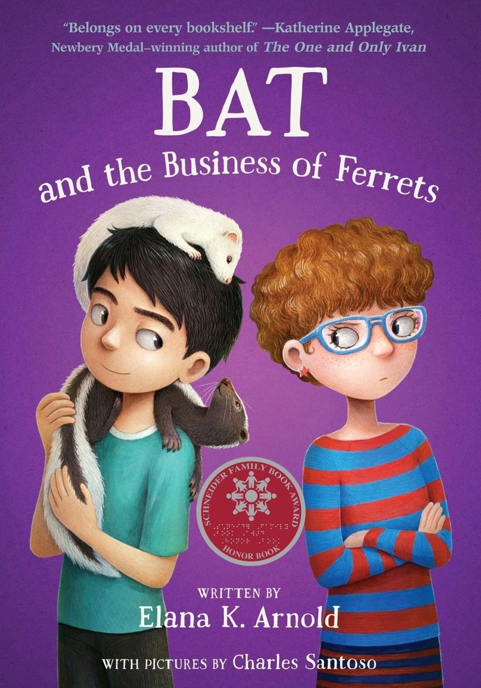
Bat and the Business of Ferrets
Elana K. Arnold · Charles Santoso
ISBN 9780063385153
United States
Bat’s interest in animals continues in an illustrated chapter-book story involving ferrets. The longer format allows time with his routines and relationships; offer it as a bridge beyond picturebooks rather than expecting the reading experience of a short read-aloud.
Illustrated chapter book
Schneider Family Book Award 2026 — Younger Children honour · Award / selection record

Bernie Thinks in Boxes
Jess Horn · Zoe Bennett
ISBN 9781922930033
Australia
Bernie organises experiences into boxes and encounters a situation that does not fit her familiar system. The visual structure makes a particular way of thinking accessible while leaving room to discuss support, flexibility and the effort change can require.
Story / creator connection: Australia
Dolly Gray Picture Book Award 2026 — winner · Award / selection record
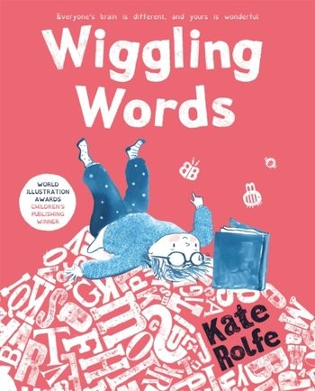
Wiggling Words
Kate Rolfe
ISBN 9781035019601
United Kingdom
Words become a visual playground for exploring dyslexia, creativity and the effort of reading. The book gives readers different ways to engage with language, inviting attention to what supports confidence rather than measuring everyone by the same route through print.
Carnegie Medal for Illustration 2026 — winner · Award / selection record

Bear Shaped
Dawn Coulter-Cruttenden
2020 · Oxford University Press
United Kingdom
When Jack loses his beloved bear, the search brings help from strangers. Look at how the pictures make the bear’s familiar presence and sudden absence felt.

Leo and the Octopus
Isabelle Marinov · illustrated by Chris Nixon
2021 · Templar Books
United Kingdom
Leo finds a connection with Maya, an octopus at the aquarium. Notice how the illustrations show changes in Leo’s comfort in different places.

The Boy Who Loves to Lick the Wind
Fiona Carswell · illustrated by Yu Rong
2024 · Otter-Barry Books
United Kingdom
At the seaside, two boys discover a shared pleasure in licking the wind. Talk about how curiosity about someone else’s experience can begin a friendship.

Remarkable Remy
Melanie Heyworth · illustrated by Nathaniel Eckstrom
2023 · Hardie Grant Children’s Publishing (Bright Light) · hardback · ISBN 9781761210372
Australia
A child describes what makes their autistic friend Remy remarkable. Ask what the friend’s viewpoint lets readers see about Remy’s interests and ways of experiencing the world.

Through the Eyes of Me
Jon Roberts · illustrated by Hannah Rounding
2017 · Graffeg
United Kingdom
Four-year-old Kya shares the things she enjoys and the things she finds difficult. Read together and notice how her perspective shapes what readers learn about her day.

Talking Is Not My Thing
Rose Robbins
2021 paperback · Scallywag Press
United Kingdom
A non-verbal girl narrates an evening with her brother and grandmother. Follow how the illustrations and different kinds of speech bubbles show what she thinks and how she communicates.

Back to Front and Upside Down!
Claire Alexander
2012 · Eerdmans Books for Young Readers
United States
Stan struggles to write a message on a birthday card. Look at what changes when he feels able to ask for help.
Sensory experiences and preferences
Different experiences of noise, touch, movement and crowded places. These stories invite conversation about individual preferences and adjustments; a strategy that helps one character may not suit another reader.

Too Sticky! Sensory Issues with Autism
Jen Malia · Joanne Lew-Vriethoff
· Albert Whitman & Company
United States
A child navigates the sensory demands of a classroom slime experiment.

This Beach Is Loud!
· New York: Dial Books for Young Readers
United States
A beach trip shows how noise and other sensory experiences can become overwhelming.

Too Much! An Overwhelming Day
Jolene Gutiérrez · Angel Chang
· New York · Abrams Appleseed · ISBN 9781419764264
United States
Colour and rhythm convey the accumulation of sensory demands and the experience of finding a quieter space. A starting point for asking children what helps them feel comfortable.

Too Loud! Soothing Sensory Overload with Music
Bambi Eloriaga-Amago · Gani Riel Cabezas
Listed edition: ISBN 9789716254990
Philippines
Elmo finds everyday sound overwhelming and discovers a connection with music. Read this as one child’s sensory experience rather than a promise that music will soothe everyone; invite children to choose which sounds, pauses or forms of participation work for them.

A Day at the Beach
Every Cherry Publishing
ISBN 9781802634877
United Kingdom
A beach-themed board book offers prompts for a sensory reading, with linked soundscapes. Choose materials and sounds with the reader, introduce them gradually and allow an entirely quiet reading if that is more comfortable.
Access features: Sensory board book; optional soundscapes

Autumn Is Awesome
Every Cherry Publishing
ISBN 9781802634938
United Kingdom
Autumn provides the setting for a short sensory story with opportunities to explore seasonal experiences. The book can support a slow, choice-led reading with familiar objects; participation does not require touching or hearing every suggested element.
Access features: Sensory board book; optional soundscapes

I Hear the Snow, I Smell the Sea
Janice Milusich · Chris Raschka
ISBN 9780593308172
United States
A blind child experiences the changing year through sound, smell, touch and movement. Raschka’s images invite discussion of the many ways a place can be known, without presenting vision as the only meaningful route to experience.
Schneider Family Book Award 2026 — Younger Children honour · Award / selection record

The Quiet Book
Deborah Underwood · Renata Liwska
ISBN 9780547215679
United States
Different kinds of quiet range from anticipation to comfort and uncertainty. The short captions and small animal scenes invite readers to compare what quiet feels like in different situations; a quieter setting is a preference, not a requirement to stop communicating.

The Loud Book!
Deborah Underwood · Renata Liwska
ISBN 9780544430648
United States
Familiar noises become a sequence of comic and recognisable situations. Pair with The Quiet Book to compare preferences, giving readers control over whether to imitate a sound, discuss it softly or simply look.
Mental Health
These books give children and adults ways to talk about mental health, including depression and bipolar disorder. Read together when the subject is close to a child’s own experience.
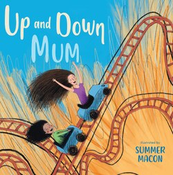
Up and Down Mum
Illustrated by Summer Macon
· Child’s Play · paperback · ISBN 9781786283399
United Kingdom
A child narrates life with a mother who has bipolar disorder, using a roller-coaster comparison to convey shifts in energy and mood. An information spread supports discussion; the book was developed in consultation with affected families.
Edition and cover details- Cover pending
The Princess and the Fog: A Story for Children with Depression
Anthony Lloyd Jones
2015 · Jessica Kingsley Publishers · ISBN 9781849056557
United Kingdom
A fog interrupts a young princess’s everyday life. Read together to talk about persistent low mood, asking for help and what supportive adults can do. The publisher recommends ages 5–7.

Ruby’s Worry
First published 2018 · Listed edition: ISBN 9781408892152
United Kingdom
Ruby notices a worry that follows her and grows as she tries to hide it. Its changing size makes an abstract feeling visible; the conversation at the end offers a way to begin sharing worries without promising that talking will instantly remove every anxiety.

The Huge Bag of Worries
Virginia Ironside · Frank Rodgers
2011 · Hodder Children’s Books · paperback · ISBN 9780340903179
United Kingdom
Jenny carries a growing bag of worries that other people do not seem to understand. Making the worries visible and sorting them with a trusted adult creates a practical discussion prompt; children can choose which worries they want to share and with whom.
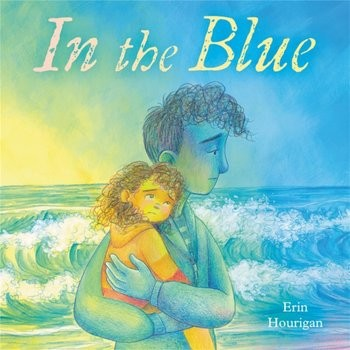
In the Blue
Erin Hourigan
ISBN 9780316497626
United States
Colour gives a child a way to understand a father’s depression and its effect on family life. Read together with room to explain that a child is not responsible for fixing an adult’s illness, and that support can come from beyond the family.
Schneider Family Book Award 2023 — Young Children honour · Award / selection record

Waking Ben Doldrums
Heather Smith · Byron Eggenschwiler
ISBN 9781459833913
Canada
Frida encounters a neighbour whose withdrawal unsettles the routines of their apartment building. The story opens a gentle conversation about depression and community care, with room to explain that a child is not responsible for curing an adult’s distress.
Story / creator connection: Canada
IBBY Outstanding selection 2025 · Award / selection record

My Amazing ADHD Brain
Emily Snape (author-illustrator)
2024 · Summersdale / Vie · Paperback · ISBN 9781837991266
United Kingdom
Emily Snape’s illustrated introduction to ADHD uses the cheerful monster Pip to explore attention, energy, self-understanding and strategies for everyday situations. The visual characterisation makes a complex experience approachable, though no single character can stand for every person with ADHD.

My Amazing Autistic Brain
Emily Snape (author-illustrator)
2026 · Summersdale / Vie · Paperback · ISBN 9781837998777
United Kingdom
A picture-led introduction to different autistic experiences, featuring a cast of distinctive illustrated characters. Compare how the characters express individual preferences and strengths rather than treating autism as a single, uniform experience.
Deaf and hard-of-hearing experiences
Picturebooks featuring deaf and hard-of-hearing characters, Deaf history and sign language. Signed languages vary by country, so check which language an edition depicts.

Can Bears Ski?
Raymond Antrobus · Polly Dunbar
· Somerville, Massachusetts: Candlewick Press
United Kingdom
A young bear makes sense of sounds, hearing loss and new ways to communicate.

Moses Goes to a Concert
Isaac Millman
· New York: Farrar, Straus and Giroux
United States
A Deaf class meets a Deaf percussionist. The book includes American Sign Language (ASL).

Listen: How Evelyn Glennie, a Deaf Girl, Changed Percussion
Shannon Stocker · Devon Holzwarth
· New York: Dial Books for Young Readers
United States
A picturebook biography follows Evelyn Glennie’s developing relationship with sound and percussion. Read alongside her own accounts where possible, attending to the changes in teaching and listening that supported her work rather than presenting deafness as something music simply removes.
A picturebook biography of Scottish percussionist Evelyn Glennie.
Schneider Family Book Award 2023 — Young Children winner · Award record
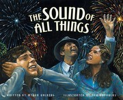
The Sound of All Things
Myron Uhlberg · Ted Papoulas
· Atlanta, Georgia: Peachtree Publishers
United States
A hearing child and his Deaf parents share an outing at Coney Island.

The William Hoy Story: How a Deaf Baseball Player Changed the Game
Written by Nancy Churnin; illustrated by Jez Tuya
· Albert Whitman & Company · ISBN 9780807591925
United States
A picturebook biography of the Deaf baseball player William Hoy.
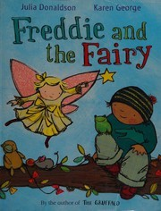
Freddie and the Fairy
Written by Julia Donaldson; illustrated by Karen George
· London: Macmillan Children’s Books · ISBN 9780330511186
United Kingdom
A wish-granting fairy who is hard of hearing prompts Freddie to rethink how he communicates.
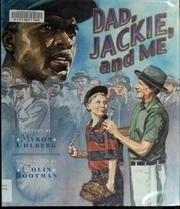
Dad, Jackie, and Me
Myron Uhlberg · Colin Bootman
· Atlanta, Georgia: Peachtree Publishers
United States
A hearing boy and his Deaf father bond over baseball and Jackie Robinson.

The Printer
Myron Uhlberg · Henri Sørensen
· Atlanta, Georgia: Peachtree Publishers
United States
A Deaf printer uses sign to warn colleagues about a fire.

Moonbird
Joyce Dunbar · Jane Ray
· London: Doubleday
United Kingdom
A deaf prince encounters a bird that helps him and those around him discover different ways to communicate.

Sound Switch Wonder
Christine J. Ko and Owen Whang · Katie Crumpton
· West Margin Press
United States
A deaf child and his mother share what listening with cochlear implants can feel like.
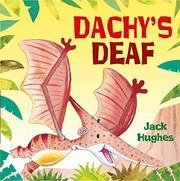
Dachy’s Deaf
Jack Hughes
· London: Franklin Watts
United Kingdom
A young dinosaur wears a hearing aid and has an adventure with friends.

Moses Goes to School
Isaac Millman
· New York: Farrar, Straus and Giroux
United States
Moses’s school day unfolds through pictures, written English and examples of American Sign Language.

The Deaf Musicians
Pete Seeger and Paul DuBois Jacobs · R. Gregory Christie
· New York: G. P. Putnam’s Sons
United States
A jazz pianist who loses his hearing finds new collaborators through a sign language class.
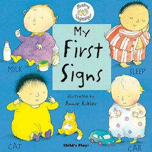
My First Signs
Illustrated by Annie Kubler
Child’s Play · 2004 · British Sign Language edition · ISBN 9781904550044
United Kingdom
A board book featuring everyday BSL signs with drawings of babies using them in context.
Edition and cover details
El Deafo
Cece Bell
ABRAMS · paperback (2014), 248 pages · ISBN 9781419712173
United States
For inclusive reading conversations: a graphic memoir of hearing loss, school and friendship. Discuss the barriers in the classroom and the choices adults and peers can make. This is the original paperback, rather than the expanded Superpowered Edition.

象脚鼓
殷健灵
· 天天出版社 (Daylight Publishing House) · Chinese · ISBN 9787501616039
China
Language of this edition: Chinese
A fictionalised account of deaf dancer Tai Lihua’s childhood: Dongyin discovers that she can feel music through vibrations in the floor and begins to dance. Selected for IBBY’s 2021 Outstanding Books for Young People with Disabilities.
Edition and cover details
Listening to the Quiet
Cassie Silva · Frances Ives
2024 · Lantana Publishing · paperback · ISBN 9781836290216
United Kingdom
Jacki and her mother find new ways to share experiences as her mother’s hearing changes. Read the changing relationship and the illustrations alongside the forms of communication they explore; the story offers one family’s experience rather than a single model of deaf life.
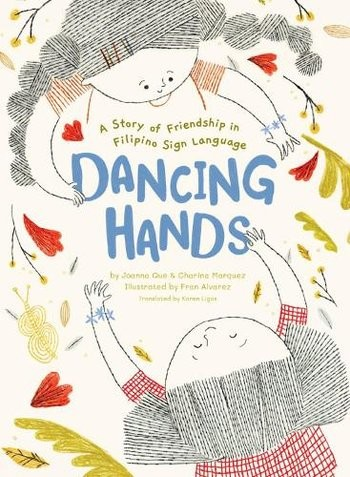
Dancing Hands: A Story of Friendship in Filipino Sign Language
Joanna Que and Charina Marquez · Fran Alvarez · Karen Llagas (translator)
ISBN 9781797213323
Philippines
Two children develop a friendship through Filipino Sign Language. The illustrated signs belong to a particular language, so read them with an appropriate model and avoid treating them as interchangeable with British or American Sign Language.
Edition language: English translation; Filipino Sign Language
Schneider Family Book Award 2024 — Young Children honour · Award / selection record

Proud to Be Deaf: Discover My Community and My Language
Ava, Lilli and Nick Beese · Romina Martí · James Jordan
ISBN 9781526302182
United Kingdom
Ava introduces her interests, family and Deaf community through words, photographs and illustrations. Her perspective makes room to discuss language and identity alongside everyday childhood activities, without treating deafness as the whole of a person’s life.
IBBY Outstanding selection 2019 · Award / selection record

Monster Hands
Karen Kane and Jonaz McMillan · Dion MBD
ISBN 9780593532294
United States
Two deaf friends use signed conversation and shadow play to address a night-time fear. The visual exchanges make friendship and reassurance central; check the book’s American Sign Language rather than assuming the signs are BSL.
Schneider Family Book Award 2025 — Young Children honour · Award / selection record
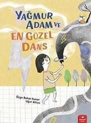
Yağmur Adam ve En Güzel Dans
Özge Bahar Sunar · illustrated by Uğur Altun
Turkish · 2019 · Redhouse Kidz · İstanbul · ISBN 9786052079539
Türkiye
Language of this edition: Turkish
A girl who is deaf experiences the rhythm of rain through movement and dance, prompting the Rain Man to reconsider his withdrawal. The story links sensory experience with communication and the natural world.
Edition and cover details
Chinese diasporic childhoods and cultural identity

Eyes That Kiss in the Corners
Joanna Ho · Dung Ho
· New York: Harper
United States
A girl sees a family resemblance across generations and learns to value it.

Amy Wu and the Perfect Bao
Kat Zhang · Charlene Chua
· New York: Aladdin
United States
Making bao with family gives Amy room to learn by experimenting.

Dim Sum for Everyone!
· New York: Alfred A. Knopf
United States
A family shares small dishes at a dim sum restaurant, with details that invite children to talk about food and family routines.

The Truth About Dragons
Julie Leung · Hanna Cha
· New York: Henry Holt and Company
United States
Two grandmothers tell different dragon stories, both part of a child’s inheritance.
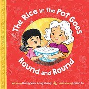
The Rice in the Pot Goes Round and Round
Wendy Wan-Long Shang · Lorian Tu
· New York: Orchard Books
United States
A cumulative rhyme follows a Chinese American family gathering around the dinner table.

A Big Mooncake for Little Star
· New York: Little, Brown and Company
United States
A playful story about the phases of the moon, inspired by the Mid-Autumn Festival.

Chinatown
· New York: Henry Holt and Company
United States
A child accompanies his grandmother through a neighbourhood shaped by Chinese migration.

Dim Sum Palace
X. Fang
· London: Pushkin Children’s Books
United States
A fantastical visit to a dim sum palace centres food, family and imagination.

Goldy Luck and the Three Pandas
Natasha Yim · Grace Zong
· Watertown, Massachusetts: Charlesbridge
United States
A Lunar New Year retelling of Goldilocks that makes room for repair and hospitality.

Bringing In the New Year
· New York: Alfred A. Knopf
United States
A Chinese American family prepares for Lunar New Year through shared household traditions.

I Dream of Popo
Livia Blackburne · Julia Kuo
· New York: Roaring Brook Press
United States
A child and her grandmother sustain a bond across the distance between Taiwan and the United States.

Year of the Cat
Richard Ho · Jocelyn Li Langrand
· New York: Greenwillow Books
United States
A retelling of the zodiac race that asks what happened to the cat.

Tofu Takes Time
Helen H. Wu · Julie Jarema
· Minneapolis, Minnesota: Beaming Books
United States
A girl learns patience as she and her grandmother make tofu together.

Kite Flying
· New York: Alfred A. Knopf
United States
A family makes and flies a dragon kite together.

Two New Years
Richard Ho · Lynn Scurfield
· San Francisco, California: Chronicle Books
United States
A Chinese Jewish family celebrates Lunar New Year and Rosh Hashanah.
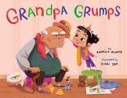
Grandpa Grumps
Katrina Moore · Xindi Yan
· Little Bee Books
United States
Daisy tries to connect with her visiting grandfather across a language barrier.

My Day with Gong Gong
Sennah Yee · Elaine Chen
· Annick Press
Canada
A trip through Chinatown gives a child and her grandfather new ways to understand one another.

地下鐵 (The Sound of Colors)
Traditional Chinese · ISBN 9570316519
A journey through a city railway turns into a series of imagined scenes.
向左走．向右走 (Turn Left, Turn Right)
Traditional Chinese · ISBN 9577452035
Parallel scenes follow two neighbours whose daily routes keep taking them in opposite directions.

The Ugly Vegetables
A child envies neighbouring flower gardens before discovering what her mother’s vegetables contribute to a shared meal. The story connects family knowledge with neighbourhood exchange without making beauty the only measure of value.
- Cover pending
Powerful Like a Dragon
Christopher Cheng · Illustrated by Jacqueline Tam
2025 · Roaring Brook Press · ISBN 9781250829399
Shu Lok is sent away from war with his cousins and draws strength from his parents’ words about dragons. The recurring dragon image connects courage, kindness and the experience of displacement.
United States
- Cover pending
Paper Son: The Inspiring Story of Tyrus Wong, Immigrant and Artist
Julie Leung · Illustrated by Chris Sasaki
2019 · Schwartz & Wade Books · ISBN 9781524771874
The young Tyrus Wong leaves China for the United States and develops an artistic practice shaped by his experiences and Chinese painting traditions. The biography invites readers to consider migration, exclusion and creative achievement.
United States
- Cover pending
I Am Golden
Eva Chen · Illustrated by Sophie Diao
2022 · Feiwel & Friends · ISBN 9781250842053
A family addresses Mei with affection, celebrating her Chinese American identity and the possibilities she carries. The warm, luminous images explore belonging and cultural pride without requiring the child to prove her worth to others.
United States
Gender and sexuality
Discuss which expectations the stories challenge and what possibilities they offer their characters.

Julián Is a Mermaid
· Somerville, Massachusetts: Candlewick Press
United States
Julián explores dress and self-expression with the support of his abuela.

When Aidan Became a Brother
Kyle Lukoff · Kaylani Juanita
· New York: Lee & Low Books
United States
A transgender boy thinks about how to welcome a new sibling.
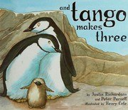
And Tango Makes Three
Justin Richardson and Peter Parnell · Henry Cole
· New York: Simon & Schuster Books for Young Readers
United States
Two male penguins raise a chick together in a story based on real penguins.

Red: A Crayon’s Story
Michael Hall
· New York: Greenwillow Books
United States
A crayon labelled red discovers that it can draw in blue.

Prince & Knight
Daniel Haack · Stevie Lewis
· New York: Little Bee Books
United States
A fairy-tale romance between a prince and a knight.

My Rainbow
DeShanna Neal and Trinity Neal · Art Twink
· New York: Kokila
United States
A mother makes a wig that reflects her transgender daughter’s sense of herself.

Calvin
JR Ford and Vanessa Ford · Kayla Harren
· New York: G. P. Putnam’s Sons
United States
Calvin prepares to tell his family and school that he is a boy.
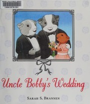
Uncle Bobby’s Wedding
Sarah S. Brannen · Lucia Soto
· London: Hodder Children’s Books
United States
A young girl wonders what her uncle’s marriage will mean for their relationship.
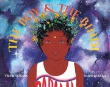
The Boy & the Bindi
Vivek Shraya · Rajni Perera
· Vancouver, British Columbia: Arsenal Pulp Press
Canada
A boy explores his curiosity about his mother’s bindi and what it means to wear one.

Love Makes a Family
Sophie Beer
· New York: Dial Books for Young Readers
Australia
A board book showing different families through everyday moments of care.

Bathe the Cat
Alice B. McGinty · David Roberts
· San Francisco, California: Chronicle Books
United States
A lively comedy about a family with two dads and a cat intent on avoiding bath time.

Neither
Airlie Anderson
· New York and Boston: Little, Brown and Company
United States
An imaginative story about belonging beyond a world organised around two categories.

Introducing Teddy: A Gentle Story About Gender and Friendship
Jessica Walton · Dougal MacPherson
· London: Bloomsbury
United Kingdom
A teddy bear shares her gender identity with a friend.

Worm Loves Worm
J. J. Austrian · Mike Curato
· New York: Balzer + Bray
United States
Two worms plan a wedding and question the roles their friends expect them to play.

Pink Is for Boys
Robb Pearlman · Eda Kaban
· Philadelphia, Pennsylvania: Running Press Kids
United States
Colour offers a simple way into a conversation about gender stereotypes.

My Shadow Is Pink
Scott Stuart
· Larrikin House
Australia
A child’s shadow becomes a visual way to explore gender expression and family support.

A House for Everyone: A Story to Help Children Learn about Gender Identity and Gender Expression
Jo Hirst · Naomi Bardoff
· London: Jessica Kingsley Publishers
Australia
Children build a playhouse together and introduce different ways of expressing who they are.

William’s Doll
Charlotte Zolotow · William Pène du Bois
William wants a doll despite the adults and children who tell him it is the wrong toy for a boy. The story invites readers to question who gets to decide what caring play should look like.
United States

The Paper Bag Princess
Robert Munsch · Michael Martchenko
Elizabeth sets out to rescue a prince after a dragon destroys her home. Her resourcefulness and the prince’s response turn the familiar rescue plot into a question about respect.
Canada
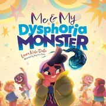
Me and My Dysphoria Monster
Laura Kate Dale; illustrated by Hui Qing Ang
2022 · Jessica Kingsley Publishers · ISBN 9781839970931
United Kingdom
Uses a monster as a visual metaphor to help young readers talk about gender dysphoria and the support a child can receive.
Edition and cover detailsMommy, Mama, and Me
Lesléa Newman · Carol Thompson
· Tricycle Press · board book · ISBN 9781582462639
Publisher edition and cover details
United States
A toddler spends the day with two mums in a rhyming board book.

Daddy, Papa, and Me
Lesléa Newman · Carol Thompson
2009 · Tricycle Press · ISBN 9781582462622
United States
Rhythmic words and images follow a toddler and two dads through everyday play and care.

The Unboy Boy
Richa Jha · Gautam Benegal
ISBN 9789352678150
India
Gagan’s gentleness and interests are judged against other people’s ideas of how a boy should behave. The story questions those expectations through his choices; ask readers who creates the category of a ‘proper’ boy and who is excluded by it.
Story / creator connection: India

10,000 Dresses
Marcus Ewert · Rex Ray
ISBN 9781583228500
United States
Bailey dreams of extraordinary dresses but receives repeated rejection when trying to describe them at home. A new friendship creates space for making and being seen; read with care for children who may recognise the hurtful responses.

Piggybook
A household takes a mother’s labour for granted until her absence makes that dependence impossible to ignore. Transformations in the pictures sharpen the satire; ask how the family’s work is shared by the end.

Loss, grief and remembrance
Compare what an object, a shared activity or an illustration can hold on to after a loss.

Michael Rosen’s Sad Book
· London: Walker Books
United Kingdom
Words and pictures make space for grief that can persist and change over time.

Grandad’s Island
Benji Davies
· London: Simon & Schuster Children’s Books
United Kingdom
An imaginative journey gives a child a way to say goodbye.

The Heart and the Bottle
· HarperCollins Children’s Books · paperback · ISBN 9780007182343
United Kingdom
A visual metaphor for withdrawing after loss and gradually opening up again.

The Goodbye Book
Todd Parr
· New York: Little, Brown and Company
United States
A small fish experiences the feelings that can follow a goodbye.

The Memory Box: A Book About Grief
Joanna Rowland · Thea Baker
· Minneapolis, Minnesota: Sparkhouse Family
United States
A child finds a tangible way to keep memories close.

Badger’s Parting Gifts
Susan Varley
· London: Andersen Press
United Kingdom
Friends remember Badger through the skills and experiences he shared with them.

Always and Forever
Alan Durant · Debi Gliori
· London: Picture Corgi
United Kingdom
Animal friends mourn Fox and find ways to remember their life together.

The Pond
Nicola Davies · Cathy Fisher
· Graffeg
United Kingdom
A family builds a pond after the death of a child’s father.
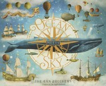
Ocean Meets Sky
Terry Fan and Eric Fan
· New York: Simon & Schuster Books for Young Readers
United States
A boy builds a boat to remember the grandfather who told him stories.

Ida, Always
Caron Levis · Charles Santoso
· New York: Atheneum Books for Young Readers
United States
Two polar bears face illness and death, with attention to the friendship that continues through memory.

Goodbye Mog
· London: Collins
United Kingdom
A family says goodbye to an old cat as a new kitten arrives.

Cry, Heart, But Never Break
Glenn Ringtved · Charlotte Pardi
· New York: Enchanted Lion Books
Denmark
A fable in which Death helps children think about their grandmother’s approaching death.

Many Shapes of Clay: A Story of Healing
Kenesha Sneed
· Munich, London and New York: Prestel
Germany / United Kingdom / United States
A child works with clay while learning how to live with loss.

The Scar
Charlotte Moundlic · Olivier Tallec
· Somerville, Massachusetts: Candlewick Press
France
A boy tries to hold on to memories of his mother after her death.

Missing Mummy
Rebecca Cobb
· London: Macmillan Children’s Books
United Kingdom
A child experiences the confusion and sadness that follow the death of a parent.

The Invisible String
Patrice Karst · Joanne Lew-Vriethoff
· Little, Brown Books for Young Readers
United States
An invisible string gives children a metaphor for staying connected to loved ones across separation and loss.
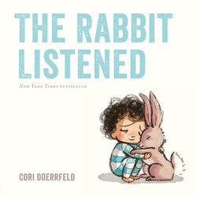
The Rabbit Listened
· New York: Dial Books
United States
When something Taylor has made falls apart, a quiet companion offers a way to think about listening after loss or disappointment.

Duck, Death and the Tulip
Wolf Erlbruch
Consider how gesture and sparse dialogue shape a conversation about mortality.
Germany

Old Pig
Margaret Wild · Ron Brooks
Old Pig and Granddaughter share everyday routines as Old Pig approaches death. Their attention to meals, walks and familiar places makes remembering concrete; allow space for a reader’s own experiences of loss.
Australia

The Memory Tree
Britta Teckentrup
2014 · Orchard Books · ISBN 9781408326343
United Kingdom
Fox’s friends share memories of him. As their stories accumulate, a tree grows in the clearing. The story uses sleep as a metaphor for death, which may need explaining to young readers.
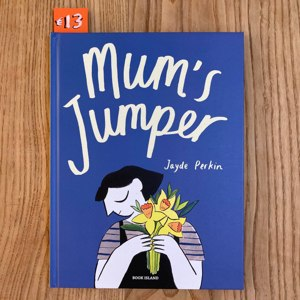
Mum’s Jumper
Jayde Perkin
· Book Island · hardback · ISBN 9781911496137
United Kingdom
After her mum dies, a girl finds comfort in wearing her red jumper. Look at how the palette shifts as the jumper changes meaning. About parental death, for shared reading from around age five.

The Boy and the Gorilla
Jackie Azúa Kramer · Cindy Derby
2020 · Walker Books · ISBN 9781406395549
United States
A quiet conversation with a gorilla helps a boy ask the questions he has been holding back since his mother’s death. The dialogue leaves space for silences in a shared reading.

The Hare-Shaped Hole
John Dougherty · Thomas Docherty
2023 · Frances Lincoln Children’s Books · ISBN 9780711276055
United Kingdom
A turtle keeps seeing the space where his friend ought to be. Rhyme and negative space make this accessible for an early-primary conversation about the death of a friend.

The Phone Booth in Mr. Hirota’s Garden
Heather Smith · Rachel Wada
2019 · Orca Book Publishers · ISBN 9781459821033
Canada
After a tsunami, a disconnected phone gives villagers somewhere to speak to the people they have lost. About a parent’s death and collective bereavement; preview for younger readers.

A Last Goodbye
Elin Kelsey · Soyeon Kim
2020 · Owlkids Books · ISBN 9781771473644
Canada
Mixed-media scenes invite readers to consider how different animals respond to death. Useful for primary-age readers approaching bereavement through illustrated nonfiction.
Always Remember
Cece Meng · Jago
· Philomel Books · ISBN 9780399168093
United States
A community of sea creatures remembers Old Turtle through the acts of care that each one experienced. Ages 3–7. Discuss the death of a friend with an adult when appropriate.
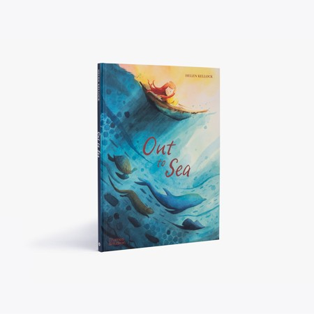
Out to Sea
Helen Kellock
· Thames & Hudson · ISBN 9780500660140
United Kingdom
After her grandmother dies, Lara is carried out to sea by her tears. The shifting scale of the water gives visible form to grief. Consider shared reading for children affected by bereavement.

The Tenth Good Thing About Barney
Judith Viorst · Erik Blegvad
· Atheneum Books for Young Readers · ISBN 9780689206887
United States
A boy trying to name ten good things about his cat finds a final thought in the garden. Best read with room to talk about pet death and burial.

Death in a Nut
Eric Maddern · Paul Hess
· London · Frances Lincoln · ISBN 184507081X
United Kingdom
A traditional tale asks what happens when a boy traps Death to save his mother. Read together to discuss personified death and the story’s ending.

Η βάρκα που τη λένε μνήμη: Η μνήμη ως βάλσαμο της ψυχής και θεμέλιο της κοινωνίας
Βαγγέλης Ηλιόπουλος (text) · Ντανιέλα Σταματιάδη (illustration)
Greek · Αθήνα · Νομική Βιβλιοθήκη · 2017 · ISBN 9789605626907
Greece
Language of this edition: Greek
A boat gives remembering a physical shape. Look at how the domestic objects and the watery setting connect an individual memory to a wider community.
Edition and cover details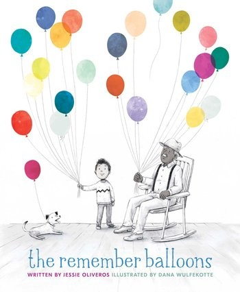
The Remember Balloons
Jessie Oliveros · Dana Wulfekotte
ISBN 9781481489157
United States
A child’s grandfather begins to lose the balloons that hold his memories. The visual metaphor opens a supported conversation about dementia and changing relationships; distinguish memory loss from death and leave space for different family experiences.
Schneider Family Book Award 2019 — Young Children honour · Award / selection record
Long Way Down: The Graphic Novel
Jason Reynolds · Danica Novgorodoff
ISBN 9780571366019
United States
An elevator journey becomes a confrontation with grief and the rules surrounding retaliatory gun violence. The watercolour adaptation is for older readers, with death and threatened violence central to the narrative; preview before sharing and discuss the unresolved ending.
Graphic novel; teen readers; gun violence and bereavement
Kate Greenaway Medal 2022 — winner · Award / selection record

Granpa
First published 1984
A granddaughter and her grandfather share games, memories and fragments of conversation. Gaps between words and pictures invite readers to infer what connects the scenes, including the absence at the end.

Fairy tales, retellings and intertextuality
Which stories do readers need to recognise, and how does each book reward readers who recognise them?
See also The Paper Bag Princess in the reading list, and The Tunnel and Outside Over There in the author studies for picturebooks that draw on fairy-tale motifs.
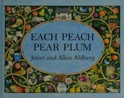
Each Peach Pear Plum
Janet and Allan Ahlberg
Nursery-rhyme and fairy-tale characters hide in a sequence of linked scenes. The rhyme encourages participation, while the pictures reward readers who pause to look beyond the character named in the text.
United Kingdom
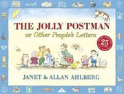
The Jolly Postman or Other People’s Letters
Janet and Allan Ahlberg
A postman delivers letters to familiar fairy-tale characters. The removable correspondence changes how the reader handles the book and invites comparison between invitations, advertisements, apologies and personal letters.
United Kingdom
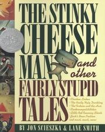
The Stinky Cheese Man and Other Fairly Stupid Tales
Jon Scieszka · Lane Smith
The narrator and characters disrupt familiar fairy tales and the order of the book itself.
United States

After the Fall: How Humpty Dumpty Got Back Up Again
Dan Santat
Humpty Dumpty’s repaired body does not immediately remove his fear of heights. Shifts in viewpoint and scale help readers consider the distance between recovering physically and feeling ready to try again.
United States

Thumbelina
Hans Christian Andersen · Retold by Jennifer Greenway · Illustrated by Arlene Graston
United States
A tiny girl born from a flower is carried through a series of encounters with animals and prospective husbands before finding a place where she belongs. Compare Arlene Graston’s illustrations with other versions of Andersen’s tale.

Thumbelina
Hans Christian Andersen · Retold by Amy Ehrlich · Illustrated by Susan Jeffers
United States
Andersen’s miniature heroine travels through a world in which others repeatedly decide where she should live and whom she should marry. Susan Jeffers’s illustrations invite comparison of scale, vulnerability and Thumbelina’s choices.
Dutton Children’s Books · 2005 hardcover · ISBN 9780525475088

Hansel and Gretel
Brothers Grimm · Illustrated by Anthony Browne
United Kingdom
Two children abandoned in a forest discover a house made of sweets and face the witch who lives inside. Anthony Browne’s unsettling images offer opportunities to discuss fear, family and visual clues beyond the words.

Der Froschkönig
Brothers Grimm · Illustrated by Binette Schroeder
Germany
After a frog retrieves a princess’s golden ball, he asks her to keep a promise she would rather forget. Binette Schroeder’s dreamlike illustrations make this Grimm fairy tale a useful starting point for discussing promises, transformation and the uneasy relationship between text and image.
Cover shown: NordSüd 2019 reprint

Rødhatten og ulven
Fam Ekman
Norway
Fam Ekman reimagines Little Red Riding Hood through her distinctive visual storytelling. Compare how the familiar girl, wolf and journey are presented here with more conventional illustrations of the fairy tale.

The Juniper Tree and Other Tales from Grimm
Brothers Grimm · Selected by Lore Segal and Maurice Sendak · Illustrated by Maurice Sendak
United States
This illustrated collection brings together Grimm tales selected by Lore Segal and Maurice Sendak. Sendak’s drawings offer a way to explore the darker emotional atmosphere of traditional fairy tales and the different roles illustration can play across stories.
Cover shown: 2002 single-volume edition

Dear Mili
Wilhelm Grimm · Translated by Ralph Manheim · Illustrated by Maurice Sendak
United States
A mother sends her daughter into the forest to escape war in this Grimm tale illustrated by Maurice Sendak. The journey brings together danger, separation and hope, while the pictures invite close attention to details not stated in the text.

King Stork
Howard Pyle · Illustrated by Trina Schart Hyman
United States
This illustrated fairy tale by Howard Pyle features a stork king and a world of enchantment. Consider how Trina Schart Hyman’s detailed pictures establish the setting and shape readers’ expectations of a traditional tale.
Cover attributed to the 1974 World’s Work UK edition; visual edition match pending.

Flower Fairy Tales
Ernst Kreidolf
Switzerland
Ernst Kreidolf transforms flowers and other elements of the natural world into fairy-tale figures. His delicate illustrations invite readers to consider how plants become characters and how fantasy changes the way a garden is seen.

Prince Cinders
Babette Cole
United Kingdom
A small, untidy prince dreams of being strong and handsome like his brothers, but a fairy’s magic does not work quite as planned. Babette Cole turns Cinderella’s familiar roles upside down with humour.
Cover shown: Puffin paperback

Princess Smartypants
Babette Cole
United Kingdom
A princess who enjoys her independence sets difficult tasks for the princes who want to marry her. This playful reversal of fairy-tale expectations opens discussion about choice, marriage and gender roles.
Cover shown: Puffin paperback

Cinder Edna
Ellen Jackson · Illustrated by Kevin O’Malley
United States
Two neighbours experience very different Cinderella stories: one waits for magical help while the other relies on practical decisions. The parallel plots invite readers to compare agency, romance and what counts as a happy ending.
Cover shown: HarperCollins paperback
Snow White in New York
Fiona French
United Kingdom
Fiona French relocates Snow White to a glamorous New York setting inspired by the 1920s. Readers can trace how the familiar characters and dangers change when a traditional fairy tale enters a modern city.
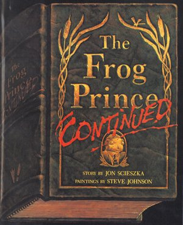
The Frog Prince, Continued
Jon Scieszka · Illustrated by Steve Johnson
United States
After the supposed happy ending, the frog prince discovers that married life is not quite what he expected. Jon Scieszka’s comic sequel questions the promise of living happily ever after.

The True Story of the Three Little Pigs
Jon Scieszka · Illustrated by Lane Smith
United States
The wolf tells his own version of the Three Little Pigs, claiming that the familiar story has been misunderstood. Compare his account with the traditional tale to explore unreliable narrators and competing viewpoints.

The Three Little Wolves and the Big Bad Pig
Eugene Trivizas · Illustrated by Helen Oxenbury
United Kingdom
Three little wolves build increasingly strong houses to protect themselves from a destructive big bad pig. By reversing the familiar roles, the story invites discussion of conflict, assumptions and unexpected solutions.

Gina Kaminski Rescues the Giant
Craig Barr-Green · illustrated by Francis Martin
2025 · Little Tiger · ISBN 9781801046596
United Kingdom
English
Gina, an autistic child who refuses to accept the usual plot, revisits Jack and the Beanstalk and asks why the giant must be the villain. Notice her authority as narrator and the way pictorial cues interrupt familiar fairy-tale expectations.

The Tunnel
A brother and sister enter an unsettling imaginative landscape through a tunnel. Visual references to fairy tales complicate the journey and the changing relationship between the siblings.

Into the Forest
A child takes a route through the forest to visit his grandmother and encounters familiar fairy-tale figures. Notice the shift between colour and monochrome and the clues that connect the journey with anxiety at home.

You Can’t Kill Snow White
Alemagna revisits Snow White through unsettling images and a close attention to violence and transformation. Preview this darker retelling and compare its visual choices with versions readers already know.
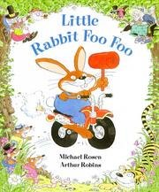
Little Rabbit Foo Foo
Michael Rosen · Arthur Robins
A mischievous rabbit repeatedly ignores a warning from a fairy. Rhythm, escalation and the final transformation make this a performance story; compare the different characters’ reactions to the punishment.

Dear Mother Goose
Michael Rosen · Nick Sharratt
2008 · Walker Books
Nursery-rhyme characters write to Mother Goose with problems that complicate their familiar stories. The letter format encourages readers to compare the advice with what they already know of each rhyme.
Cultural identity and anti-racism
Consider whose point of view shapes the story and who gets to define what belonging means.

Amazing Grace
Mary Hoffman · Caroline Binch
Grace wants to play Peter Pan, but classmates challenge her because she is Black and a girl. Her family supports her ambition; discuss the assumptions behind the objections rather than asking Grace alone to overcome them.
United Kingdom / United States

Baseball Saved Us
Ken Mochizuki · Dom Lee
A Japanese American child describes baseball inside a US wartime incarceration camp. Pair the personal story with historical context: the game offers moments of community without making the injustice of imprisonment disappear.
United States

The Day You Begin
Jacqueline Woodson · Rafael López
Children encounter moments when their languages, food or experiences make them feel different from classmates. The story values sharing on one’s own terms; readers can notice how an invitation to listen changes a classroom.
United States

The Proudest Blue: A Story of Hijab and Family
Ibtihaj Muhammad with S. K. Ali · Hatem Aly
Faizah watches her older sister wear hijab to school and responds to the admiration and hostility around them. Blue imagery gives the sisters’ pride a visual presence; make space for different readers’ relationships with faith and clothing.
United States
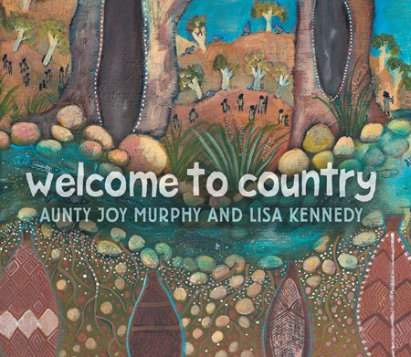
Welcome to Country
Aunty Joy Murphy · Lisa Kennedy
Walker Books · ISBN 9781922244871
Australia
A Wurundjeri welcome introduces relationships with Country and community. Read the words alongside Lisa Kennedy’s images and attend to the specific community represented.
Story / creator connection: Australia
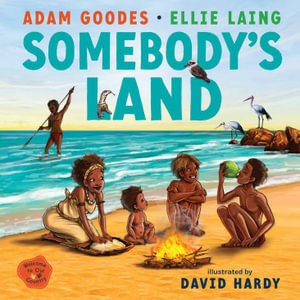
Somebody’s Land
Adam Goodes and Ellie Laing · David Hardy
Allen & Unwin · ISBN 9781760526726
Australia
Introduces First Nations presence and relationships to land. Discuss how the book challenges the idea of an empty country.
Story / creator connection: Australia
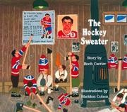
The Hockey Sweater
Roch Carrier · Sheldon Cohen · translated by Sheila Fischman
Tundra Books · ISBN 9780887761744
Canada
A Québécois child’s hockey jersey becomes a story of belonging, language and community. Compare the English translation with the expressive illustrations.
Story / creator connection: Canada
The Why-Why Girl
Mahasweta Devi · Kanyika Kini
Tulika Books · ISBN 9788181460189
India
A questioning protagonist challenges the limits placed on her learning. Discuss who gets to ask questions and attend school.
Story / creator connection: India

Wanda
Sihle Nontshokweni and Mathabo Tlali · Chantelle and Burgen Thorne
Otter-Barry Books · ISBN 9781913074470
South Africa
Hair, teasing and family stories open conversations about identity and confidence. Compare Wanda’s own words with the ways other characters describe her.
Story / creator connection: South Africa
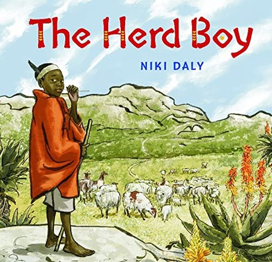
The Herd Boy
Niki Daly
Eerdmans Books for Young Readers · ISBN 9780802854179
United Kingdom / United States / South Africa · Publication record
Follows a young herder’s responsibilities and hopes. Look at how landscape, dialogue and illustration establish the Eastern Cape setting.
Story / creator connection: South Africa

Grandad Mandela
Zindzi, Zazi and Ziwelene Mandela · Sean Qualls
Frances Lincoln Children’s Books · ISBN 9781786031365
United Kingdom
Members of the Mandela family answer children’s questions about apartheid, activism and freedom. Discuss how family recollection contributes to an account of history.
Story / creator connection: South Africa

Elmer
Andersen Press editions
United Kingdom
A patchwork elephant tries to look like the rest of the herd and discovers what his absence changes. Look beyond the celebration of colour to the herd’s shared humour and Elmer’s wish to belong.
Publisher edition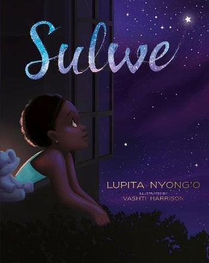
Sulwe
Lupita Nyong’o · Vashti Harrison
First published 2019 · Listed edition: ISBN 9780241394328
United States
Sulwe wishes her dark skin were lighter until a night-time story helps her reconsider what beauty can mean. Read the luminous illustrations alongside an explicit conversation about colourism, including how other people’s treatment shapes the way a child sees herself.

M għal Malta
Naomi Gatt (author-illustrator)
2023 · Merlin Publishers · ISBN 9789918240357
Malta
Language: Maltese
A Maltese-language alphabet board book grounded in the island’s everyday objects and cultural references. The large illustrated letter and compact scenes invite readers to notice how language and visual design represent place.
UK affiliate availability not verified; see publisher or specialist bookseller.

Eyes That Speak to the Stars
Joanna Ho · Illustrated by Dung Ho
A boy draws strength from family stories when a classmate’s drawing makes him question how others see him.
Edition details
Our Story Starts in Africa
Patrice Lawrence · Jeanetta Gonzales
2022 · Magic Cat Publishing
A family visit to Trinidad opens up a conversation about African and Caribbean histories.

Fortune Cookie Fortunes
A family’s fortune cookies prompt speculation about what the messages might mean. Read the gap between prediction and events as playful interpretation rather than a fixed explanation of Chinese culture.

Thanking the Moon: Celebrating the Mid-Autumn Moon Festival
A family prepares and shares a moon-viewing picnic. Attention to food, objects and small tasks makes celebration a sequence of shared contributions; invite comparisons without assuming every family observes the festival alike.
Migration, refuge and belonging
Compare how images and words handle departure, unfamiliar places and the task of making a home.

The Arrival
A newcomer navigates an unfamiliar city in a wordless sequence of drawings. Invented creatures and unreadable signs put readers alongside his uncertainty; follow recurring objects and gestures to build an interpretation.
Australia
Language of this edition: Wordless
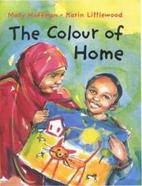
The Colour of Home
Mary Hoffman · Karin Littlewood
Hassan paints memories of Somalia while settling into a new classroom. Colour carries both painful recollection and renewed connection; read with attention to what a teacher learns by listening to a child’s account.
United Kingdom
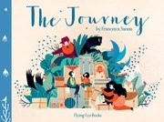
The Journey
Notice how scale and visual metaphor communicate the uncertainty of forced migration.
United Kingdom

My Name Is Not Refugee
Kate Milner
A mother explains an approaching journey to her child, with questions addressed to the reader along the way. The book connects displacement with ordinary choices and belongings while insisting that a label cannot replace a person’s name.
United Kingdom

My Two Blankets
Irena Kobald; illustrated by Freya Blackwood
2014 · Hardie Grant Egmont · ISBN 9781760501419 (publisher-listed edition)
Australia
A child who has moved to a new country imagines familiar words as a blanket and begins weaving another as a friendship grows.
Edition details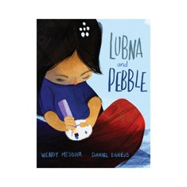
Lubna and Pebble
Wendy Meddour; illustrated by Daniel Egnéus
2019 · Oxford University Press · ISBN 9780192767257 (paperback)
United Kingdom
A familiar pebble comforts Lubna in a refugee camp. When another child arrives, she weighs what it would mean to give it away.
Edition details
The Suitcase
2019 · Nosy Crow
United Kingdom
An exhausted newcomer arrives with a suitcase. The other animals’ decision to open it invites discussion about trust and welcome.
Edition details
A Different Pond
Bao Phi; illustrated by Thi Bui
2017 · Capstone Young Readers · ISBN 9781623708030
United States
A father and son fish before dawn in Minneapolis. Their conversation connects the family’s present routines with memories of Vietnam.
Edition details
The Paper Boat: A Refugee Story
Thao Lam
2020 · Owlkids Books · ISBN 9781771473637
Canada
Wordless collage follows a family’s flight from Vietnam alongside a journey made by ants. Discuss war and forced flight in context.
Edition details
The Name Jar
Yangsook Choi
2001 · Alfred A. Knopf · ISBN 9780375806131 (hardback)
United States
After moving from Korea to the United States, Unhei considers choosing a new name. The story opens up questions about pronunciation, friendship and belonging.
Edition details
Stepping Stones: A Refugee Family’s Journey
Margriet Ruurs · Artwork by Nizar Ali Badr · Arabic translation by Falah Raheem
· Orca Book Publishers · bilingual English–Arabic hardcover · ISBN 9781459814905
Publisher edition and cover details
Canada
Arabic and English text accompanies stone arrangements that trace a Syrian family’s flight. Read together when discussing war and displacement with younger readers.
Edition details
The Little Refugee
Anh Do and Suzanne Do; illustrated by Bruce Whatley
2011 · Allen & Unwin · ISBN 9781742378329
Australia
An autobiographical account of a family’s voyage from Vietnam and a child’s first years in Australia. Includes a perilous sea crossing.
Edition details
Where Will I Live?
Rosemary McCarney
2017 · Second Story Press · ISBN 9781772600285
Canada
Photographs and brief questions invite readers to consider what home means to children displaced by conflict. Use with context about the photographs and forced migration.
Edition details
Room on Our Rock
Kate and Jol Temple; illustrated by Terri Rose Baynton
Scholastic Press
Australia
Read the same text from front to back and back to front to see how the order of the lines changes a story about turning newcomers away.
Edition details
Granny Came Here on the Empire Windrush
Patrice Lawrence · Camilla Sucre
2022 · Nosy Crow · ISBN 9781839942310
United Kingdom
Objects from Granny’s suitcase open up a family history of migration from Trinidad to England. The story touches on racism and belonging.
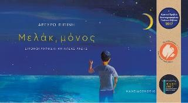
Μελάκ, μόνος
Αργυρώ Πιπίνη · Αχιλλέας Ραζής
Greek · 2016 · Καλειδοσκόπιο · Αθήνα · ISBN 9789604711215
Greece
Language of this edition: Greek
The illustrations place a child travelling alone in a landscape of displacement.
Edition and cover details
A Lion in Paris
An unfamiliar city gradually becomes a place where a lonely lion can be seen and accepted. Parisian landmarks sit alongside intimate moments of looking, making the outsider’s experience central to the journey.
War, conflict and peace
Compare the viewpoints from which conflict is shown. Check the images and subject matter before sharing with younger readers.
War Game
Michael Foreman
Young footballers enlist during the First World War and encounter its violence. The Christmas truce sits alongside the machinery of war; preview the battle scenes and resist treating a moment of fellowship as a resolution of the conflict.
United Kingdom

The Enemy: A Book About Peace
Davide Cali · Serge Bloch
A soldier in a trench begins to question the stories he has been told about his opponent. Sparse images make propaganda and uncertainty visible; compare what the narrator assumes with what the pictures allow readers to see.
France

Why?
Nikolai Popov
A dispute between a frog and a mouse grows into destructive conflict. With no written narration, changes in scale and the accumulating damage carry the argument about how a small confrontation can escalate.
Switzerland · Publication record
Language of this edition: Wordless

The Day War Came
Nicola Davies · Rebecca Cobb
Follow the image of the chair as it moves from a sign of exclusion to an invitation.
United Kingdom
Only a Donkey
Celeste Walters · Patricia Mullins
2008 · Picture Puffin paperback · ISBN 9780143501220
Australia
A teased farm donkey has a dream that connects the animals’ journey with the Australian story of Simpson and his donkey. Themes include war and remembrance.

Simpson and His Donkey
Mark Greenwood · Frané Lessac
2008 · Walker Books Australia · ISBN 9781921150180
Australia
A picturebook retelling of Gallipoli through the work of a stretcher-bearer and his donkey. Read with historical context for older primary readers.

Yellow Butterfly: A Story from Ukraine
Oleksandr Shatokhin
2023 · Brooklyn: Red Comet Press · ISBN 9781636550640
Ukraine
Wordless spreads move from dark images of war to the colours of the Ukrainian flag. Preview the intense imagery before sharing it with younger readers.

The Treasure Box
Margaret Wild · Freya Blackwood
2013 · Penguin/Viking · ISBN 9780670073658
Australia
A boy carries a rescued book as his family flees war. Notice how the collage makes fragments of print part of the story about memory. Includes bombing and bereavement.
The Librarian of Basra: A True Story from Iraq
Jeanette Winter
2019 · Clarion Books paperback · ISBN 9780358141839
United States
Based on Alia Muhammad Baker’s efforts to save the books of Basra’s library. It offers primary readers a way to talk about what communities preserve during war.

The General
Janet Charters · Michael Foreman
2013 · Templar Books paperback · ISBN 9781848771604
United Kingdom
A general’s encounter with the natural world changes what he wants to do with his army. The stylised illustrations invite comparison between military order and the life of the landscape.

The Cats in Krasinski Square
Karen Hesse · Wendy Watson
2004 · New York: Scholastic Press · ISBN 9780439435406
United States
This historical picturebook follows a Jewish girl who helps the Resistance in Nazi-occupied Warsaw. For older primary and secondary readers with historical context about the Holocaust.

Gleam and Glow
Eve Bunting · Peter Sylvada
2001 · Harcourt · ISBN 9780152025960
United States
Children forced to leave home by war entrust two goldfish to a pond. Read with older primary children to discuss displacement and what it means to return.

A Guerra
José Jorge Letria (text) · André Letria (illustration)
Portuguese · Lisboa · Pato Lógico · 2018 · ISBN 9789899965881
Portugal
Language of this edition: Portuguese
Restrained imagery gives war an unsettling presence. For older readers or supported discussion of war and its effects.
Edition and cover details- Cover pending
Shu Lin’s Grandpa
Matt Goodfellow · Illustrated by Yu Rong
2021 · Otter-Barry Books · ISBN 9781913074029
Shu Lin feels isolated at her new school until her grandfather shares his Chinese paintings. A dramatic fold-out image helps her classmates see her knowledge and invites discussion about friendship, language and belonging.
United Kingdom
Bullying and exclusion
Look for the point at which another character notices exclusion and decides what to do.

Willy the Wimp
Willy tries to change himself after being mocked for his gentleness. The exaggeration of his transformation makes room to question whether strength requires copying the behaviour of bullies.
United Kingdom

Chrysanthemum
A child who loves her name begins to doubt it after classmates tease her. Repetition reveals how comments accumulate; consider both the teacher’s intervention and what classmates could do to make their community kinder.
United States

This Is Our House
Michael Rosen · Illustrated by Bob Graham
· Walker Books · UK reissue · ISBN 9781529514025
First published by Walker Books in 1996 (original UK ISBN 9780744537505). Cover shown is the 2023 reissue.
Publisher edition and cover details
George claims a cardboard house and invents reasons to keep other children out. Changing who controls the entrance exposes the arbitrariness of his rules and gives readers a concrete way to discuss exclusion.
United Kingdom

The Invisible Boy
Trudy Ludwig · Patrice Barton
Brian is present in his classroom but often goes unnoticed. Colour gradually changes as another child includes him; look at how ordinary invitations and shared work make participation possible.
United States
Friendship, care and loneliness
Compare how distance, page space or expressions show what a character needs from others.

Love You Forever
Robert Munsch · illustrated by Sheila McGraw
· Firefly Books · Paperback ISBN 9780920668375
Canada
One of my favourite picturebooks. A mother rocks her son as a baby and continues to cherish him as he grows up. When she becomes elderly, he holds her in return, and the story closes with love passing to a new generation.

Gorilla
Hannah longs for time with her father and imagines an extraordinary companion. Browne’s visual echoes and quiet domestic details reward looking beyond the fantasy to the relationship that frames it.
United Kingdom

Lost and Found
A boy assumes a penguin needs help returning home and sets out across the sea. The journey turns on a misunderstanding about loneliness; follow the characters’ expressions to ask what kind of help is actually wanted.
United Kingdom
The Rabbit Listened
When something Taylor has made falls apart, a quiet companion offers a way to think about listening after loss or disappointment.
United States
The Kindness Club
Kate Bullen-Casanova; illustrated by Dave Petzold
2022 · Bright Light · ISBN 9781761210440
Australia
Group play provides a setting for everyday kindness and for challenging assumptions about how children should play.
Edition and cover details
Something, Someday
Amanda Gorman; illustrated by Christian Robinson
2023 · Viking Books for Young Readers · ISBN 9780593203255
United States
A small act of care becomes a shared effort to improve the neighbourhood.
Edition and cover details알사탕
Korean original
South Korea
Language of this edition: Korean
Special sweets let a lonely child hear the thoughts of people, animals and objects around him. Baek Heena’s modelled scenes turn listening into a visual discovery; compare whose feelings become audible and what the child chooses to do with that knowledge.
Magic Candies

O Meu Avô
Portuguese · Lisboa · Orfeu Negro · First published 2014 · ISBN 9789898327321 (publisher’s listed edition)
Portugal
Language of this edition: Portuguese
A retired watchmaker and a busy doctor live by different rhythms. Look for references to painting and film as their routines intersect.
Edition and cover details
Coração de mãe
Isabel Minhós Martins (text) · Bernardo P. Carvalho (illustration)
Portuguese · Planeta Tangerina · First published 2008 · ISBN 9789898145048
Portugal
Language of this edition: Portuguese
An almost invisible thread makes the bond between mother and child visible. Follow how that line links moments of joy, worry and separation.
Edition and cover details
Catch That Chicken!
Atinuke · Angela Brooksbank
Walker Books · ISBN 9781406394504
United Kingdom
Lami needs a new way to catch chickens after injuring her ankle. Retell the sequence and explore how the pictures convey speed and cleverness.
Story / creator connection: Nigeria

Gogo’s List
Portia Dery · Toby Newsome
Jacana Media · ISBN 9781431428502
South Africa
Ghanaian author Portia Dery pairs family errands with the comedy of a forgotten list. Try retelling events from different characters’ perspectives.
Story / creator connection: Ghana

Not Now, Bernard
Andersen Press editions
United Kingdom
Bernard tries to attract his parents’ attention while a monster waits outside. The repeated adult response creates dark comedy; compare what adults notice with what children can see happening in the pictures.
Publisher editionDogger
First published 1977 · Listed edition: ISBN 9781862308053 · Red Fox
United Kingdom
Dave’s treasured toy dog disappears and turns up on a school-fair stall. Hughes makes a small domestic loss feel momentous; look at the wordless exchanges that reveal his sister Bella’s kindness.
So Much!
Trish Cooke · Helen Oxenbury
First published 1994 · Listed edition: ISBN 9781406390728
United Kingdom
An extended family gathers, and everyone wants a turn with the baby. The recurring arrivals and lively voices build towards a celebration; attend to the affectionate interactions and the baby’s changing expressions.

The Kuia and the Spider
Patricia Grace · Robyn Kahukiwa
ISBN 9780582717879
New Zealand
A grandmother and a spider compare the skills of their grandchildren in a playful argument about weaving. The exchange gives family pride and intergenerational knowledge a lively form; attend to the Māori cultural setting and the specific voices telling the story.
Story / creator connection: Aotearoa New Zealand
Papu e Filo (Papu and Filo)
Roberta Bridda
Specialist tactile edition; no ISBN listed by IBBY
Italy
Two tactile characters made from different materials find ways to play together. The English-and-Italian print and braille text supports a shared reading; this specialist, handmade-format book has no ISBN in the catalogue and availability should be checked with the publisher.
Edition language: English and Italian
Access features: Large print, braille and tactile materials
Tactile spread shown in the IBBY 2019 catalogue
IBBY Outstanding selection 2019 · Award / selection record

The Boy with Flowers in His Hair
Jarvis (author-illustrator)
2023 · Walker Books · ISBN 9781529506761
United Kingdom
When David’s flowers begin to fall, his friend finds a creative way to stand beside him. Notice how colour and the changing flower motif carry vulnerability, care and friendship.
The Girls
Lauren Ace · illustrated by Jenny Løvlie
2019 · Random House Children’s Books (US edition) · ISBN 9781984896513
United Kingdom / United States edition
Four girls grow up together, take different paths and sustain their friendship. Trace how the returning tree, changing scale and repeated groupings make time visible.

The Big Umbrella
Amy June Bates and Juniper Bates · illustrated by Amy June Bates
2018 · Paula Wiseman Books / Simon & Schuster · ISBN 9781534406582
United States
A welcoming red umbrella makes room for everyone in the rain. Explore how scale, colour and the expanding composition turn a simple object into a visual metaphor for inclusion.

My Friends
Taro Gomi (author-illustrator)
2005 · Chronicle Books · Board book edition
A child describes what she has learnt from animal friends, linking everyday actions with companionship.

Little Beauty
A gorilla’s request for companionship leads to a friendship with a kitten. Changes in scale and colour make tenderness and anger visible, while the pair’s communication invites questions about whose voice is heard.

Mr Gumpy’s Outing
First published 1970
Mr Gumpy takes an increasingly crowded group for a boat ride. The repeating requests and fragile rules create anticipation before the inevitable upset, followed by a hospitable return to shore.

Bear and Rat
Christopher Cheng; illustrated by Stephen Michael King
2021 · Puffin
A story of friendship and care through illness and difficult changes.
Edition and cover details
Goodbye, Friend! Hello, Friend!
Cori Doerrfeld
Two friends help readers notice the new beginnings that can follow goodbyes.
Edition details
Elmer and the Lost Teddy
Andersen Press editions
An elephant cannot sleep without his teddy, so Elmer helps search for it. The familiar attachment object makes a gentle route into talking about comfort, difference and practical care.
Publisher editionFrank and Bert
Chris Naylor-Ballesteros
Two friends play hide-and-seek. The pictures let readers spot clues before the characters do.
Edition details
The Bus Is for Us!
Michael Rosen · Gill Tyler
2015 · Walker Books
Children imagine travelling in a succession of vehicles before celebrating a shared bus ride. Brief rhyming lines leave room for voices and actions, while the pictures extend the possibilities of each journey.

Red Ted and the Lost Things
Michael Rosen · Joel Stewart
2009 · Walker Books
A lost teddy meets other discarded belongings and tries to find a route home. The unfamiliar spaces and unlikely companions make a gentle adventure about being valued and finding help.

Picturebooks that invite philosophical questions
Ask which questions the books leave open and how the pictures affect possible answers.
The Big Question
Wolf Erlbruch
Different voices offer answers to why one is here. The accumulating possibilities invite readers to compare perspectives without requiring a single final answer.
France · Publication record

The Red Tree
Trace how recurring visual details give shape to feelings the narrator struggles to name.
Australia

What Do You Do with an Idea?
Kobi Yamada · Mae Besom
A child hesitates over an unusual idea before learning to protect and develop it. The idea’s changing visual presence makes this a useful starting point for talking about uncertainty, imagination and encouragement.
United States

A Stone Sat Still
Brendan Wenzel
A stone becomes a different place, object or landmark for the creatures around it. Repeated language and changing viewpoints invite readers to consider how perspective and time alter what seems fixed.
United States

O mundo num segundo
Isabel Minhós Martins (text) · Bernardo P. Carvalho (illustration)
Portuguese · Planeta Tangerina · 2013 edition · ISBN 9789898145550
Portugal
Language of this edition: Portuguese
Comic-like views of different places unfold during the same second. Follow what changes across each page turn and what stays simultaneous.
Edition and cover details
Com o tempo
Isabel Minhós Martins (text) · Madalena Matoso (illustration)
Portuguese · Planeta Tangerina · 2014 · ISBN 9789898145604
Portugal
Language of this edition: Portuguese
Pair the pictured changes across spreads and ask which could be noticed in a day and which need years.
Edition and cover details
Fantasmas, bananas e avestruzes
Portuguese · Assembleia da República · 2023 · ISBN 9789725568293
Portugal
Language of this edition: Portuguese
Playful pictured examples give readers a way into the unseen rules that shape daily life. Compare the ghosts with the everyday objects and ask why they share a page.

When Dad Showed Me the Universe
Ulf Stark · Illustrated by Eva Eriksson
Sweden
A father and son go out to look at the stars. Compare what each of them notices along the way.

Prince in a Pastry Shop
Marek Bieńczyk · illustrated by Joanna Concejo · translated by Benjamin Paloff
2023 · Seven Stories Press · ISBN 9781644212844
Poland / English translation
An illustrated philosophical dialogue about happiness, fleeting pleasures and suffering. Concejo’s dreamlike pencil imagery shifts between a pastry shop and imagined worlds. Published for adults; best considered as a crossover visual-literary work rather than a standard early-years picturebook.

Mr. Distinctive
Olga Tokarczuk · illustrated by Joanna Concejo
2025 · Seven Stories Press · ISBN 9781644214473
Poland / English translation
English (translated from Polish)
An illustrated fable for adults about vanity, self-image and the obsession with being seen. Concejo’s drawings and the protagonist’s changing face invite a critical reading of visual identity and the social gaze. The publisher currently lists the hardback as unavailable; retain as a research reference.

The Lost Soul
Olga Tokarczuk · illustrated by Joanna Concejo
2021 · Seven Stories Press · ISBN 9781644210345
Poland / English translation
English (translated from Polish)
A reflective illustrated narrative about the dislocation between a person and their inner life. Attend to pauses, empty space and the recurring visual motif of the lost soul. Particularly suited to older readers and adult picturebook study.

It Might Be an Apple
Shinsuke Yoshitake (author-illustrator)
2015 · Thames & Hudson
A child considers what an apple might be, moving from an ordinary object to increasingly inventive possibilities.
Art and visual storytelling
Use the books to compare visual rhythm, scale and framing. The historical cover shows how book design can frame a story.

The Dot
Vashti’s reluctance to make art changes after a teacher takes her first mark seriously. The story opens questions about encouragement, experimentation and whose work gets displayed as art.
United States

The Shape Game
· Doubleday · UK first edition · ISBN 0385601360 (hardback)
A family visit to an art gallery leads into playful transformations of shapes. Look for the links between artworks, family conversation and the drawings readers might make afterwards.
United Kingdom

Maybe Something Beautiful: How Art Transformed a Neighborhood
F. Isabel Campoy and Theresa Howell · Rafael López
Mira’s picture-making connects with a muralist’s work and a neighbourhood begins to change. Based on a community art project, the story invites discussion of collaboration and who gets to shape public spaces.
United States

Yayoi Kusama Covered Everything in Dots and Wasn’t Sorry
Fausto Gilberti
2020 · Phaidon · ISBN 9781838660802
United Kingdom
A picturebook biography that uses recurring dots to echo Kusama’s art.
Edition and cover details
The Tale of Peter Rabbit
Peter enters Mr McGregor’s garden despite his mother’s warning and struggles to escape. Potter’s small-scale illustrations balance danger with close observation of animals, clothing and the garden itself.
United Kingdom

How to Live Forever
Colin Thompson
United Kingdom
A boy searches a library that comes to life at night. Look for the miniature worlds hidden among the bookshelves.

Extra Yarn
Mac Barnett · Illustrated by Jon Klassen
Annabelle knits colour into a wintry town from a box of yarn that never seems to run out.
Edition details
Willy’s Pictures
Willy appears inside playful reinterpretations of well-known artworks. Compare the visual substitutions and framing with reproductions of the referenced paintings, leaving room for children’s own transformations.
Luna Loves Art
Joseph Coelho · Fiona Lumbers
Andersen Press
A class visit to an art gallery gives Luna another way to get to know a classmate.

Art & Max
An attempt to paint a portrait changes the characters and the materials of their world. Colour, line and the physical properties of paint become part of the joke about what making art might mean.
Challenging picturebooks
Discuss what each book leaves unresolved. Preview themes of loss, danger or exclusion before using these books with children.
Fox
Margaret Wild · Ron Brooks
Dog, Magpie and Fox form an uneasy relationship shaped by dependence, desire and betrayal. The harsh landscape and fractured lettering deserve a slow reading; leave room for disagreement about each character’s choices.
Australia

The Island
Armin Greder
A stranger arrives on an island and the inhabitants respond with suspicion and exclusion. Stark images make collective hostility difficult to look away from; preview with readers who may find the treatment of the newcomer distressing.
Switzerland

Small in the City
A child moves through a busy winter city, offering advice that gradually reveals a more personal search. Sound, weather and changes in viewpoint make the streets feel different from a small person’s position.
Canada
Kate Greenaway Medal 2021 — winner · Award record
The Red Tree
Trace how recurring visual details give shape to feelings the narrator struggles to name.
Australia

The Rabbits
John Marsden · Shaun Tan
Discuss how the narration and illustrations frame colonisation and dispossession.
Australia

The Dam
David Almond · Levi Pinfold
· Walker Studio (Walker Books) · UK paperback edition · ISBN 9781406386035 · 32 pages
Ask what music and memory can preserve as a valley is flooded.
United Kingdom

The Wall: Growing Up Behind the Iron Curtain
Peter Sís
Compare how a personal story and historical details help readers piece together life under censorship.
United States
Duck, Death and the Tulip
Wolf Erlbruch
Consider how gesture and sparse dialogue shape a conversation about mortality.
Germany
The Journey
Notice how scale and visual metaphor communicate the uncertainty of forced migration.
United Kingdom

The Day War Came
Nicola Davies · Rebecca Cobb
Follow the image of the chair as it moves from a sign of exclusion to an invitation.
United Kingdom
The Inheritance
Armin Greder
Ask what the sparse text leaves the reader to infer about power and responsibility.
Australia
Voices in the Park
Four narrators describe an overlapping visit to a park. Shifts in type, colour and landscape make differences in mood and social position visible; compare what each voice notices and overlooks.

Higglety Pigglety Pop! or There Must Be More to Life
First published 1967
Jennie the dog leaves comfort behind in search of experience and eventually a part in a play. The odd encounters and theatrical conclusion invite a reading about desire that is more complicated than finding a better home.
In the Night Kitchen
First published 1970
Mickey’s dream carries him through a kitchen where baking becomes a surreal adventure. Panels, repeated sounds and changing scale invite readers to follow the movement between a child’s body and an enormous adult world.

Outside Over There
First published 1981
Ida must recover her baby sister after goblins take her away. The unsettling fantasy attends to anger, care and responsibility; preview its imagery and leave space for different responses to the sibling relationship.

We Are All in the Dumps with Jack and Guy
First published 1993
Nursery-rhyme fragments become a visual narrative about children facing poverty and danger. Dense, disturbing imagery demands contextual discussion rather than an assumption that a rhyming text is automatically light reading.

Cicada
An insect office worker endures exclusion and exploitation in a human workplace. The restricted narration and abrupt visual shift at the end make this a challenging book about labour, power and escape.

Eric
A family hosts an exchange student whose interests seem unexpectedly small and particular. The quiet visual surprises invite readers to consider what hospitality looks like from a guest’s perspective.

Rules of Summer
Two boys move through a summer governed by strange, often unspoken rules. The relationship between the brief captions and expansive images leaves readers to negotiate power, loyalty and what may have happened between scenes.

Memorial
Gary Crew (author) · Shaun Tan (illustrator)
A family’s memories gather around a tree threatened by road development. The layered images connect personal recollection, war remembrance and public decisions about what a community preserves.
Metafictional picturebooks
These books draw attention to how stories are told. Look for characters who speak to the reader, books within books and pages that become part of the story.

The Three Pigs
Characters step outside their printed story and move between different narrative worlds.
United States
The Stinky Cheese Man and Other Fairly Stupid Tales
Jon Scieszka · Lane Smith
The narrator and characters disrupt familiar fairy tales and the order of the book itself.
United States
We Are in a Book!
Mo Willems
Elephant and Piggie discover they are being read and try to influence what the reader says.
United States

The Monster at the End of This Book
Jon Stone · Michael Smollin
Grover addresses the reader and tries to stop the page turns that move his story forward.
United States

This Book Just Ate My Dog!
Richard Byrne
· Oxford University Press · UK first edition · ISBN 9780192737281 (hardback); paperback ISBN 9780192737298 (2015)
The gutter swallows characters and the reader is asked to intervene.
United Kingdom

Chloe and the Lion
Mac Barnett · Adam Rex
The author and illustrator appear as characters and disagree about how to tell the story.
United States

Open This Little Book
Jesse Klausmeier · Suzy Lee
Nested books let readers follow characters who are also reading stories.
United States

A Perfectly Messed-Up Story
Patrick McDonnell
Marks on the page interrupt the story and the main character reacts to them.
United States

The Book With No Pictures
B. J. Novak
The printed text turns the rules of reading aloud into part of the joke.
United States
The Red Book
Barbara Lehman
· Houghton Mifflin · US first hardcover edition · ISBN 9780618428588 · 32 pages
A book found inside this wordless story opens a connection between two readers.
United States
Language of this edition: Wordless

The Rock from the Sky
Jon Klassen
2021 · Candlewick Press · ISBN 9781536215625
United States
Spare dialogue, delayed action and what the reader sees ahead of the characters create comic suspense.
Edition and cover details
Through the Magic Mirror
Toby steps through a mirror into an altered version of his surroundings. Visual incongruities and reversals reward careful looking and let readers reconstruct the rules of the imagined world.
Rhyming picturebooks and read-alouds
Start with Julia Donaldson and listen for refrains, changes in pace and rhyme that invites children to join in.

We’re Going on a Bear Hunt
Michael Rosen · Helen Oxenbury
1989 · Walker Books
United Kingdom
A family crosses grass, water and mud before its bear hunt becomes unexpectedly real. The repeated chant and changing sounds invite a spoken, signed or movement-based performance, with a quieter way to join in for readers who prefer it.

Chocolate Cake
Michael Rosen · Kevin Waldron
2017 · Puffin
United Kingdom
A child’s night-time encounter with an irresistible cake becomes a lively spoken narrative. Sound effects, pauses and the temptation to keep taking another bite make it especially rewarding to hear aloud.

A Great Big Cuddle: Poems for the Very Young
Michael Rosen · Chris Riddell
2015 · Walker Books
United Kingdom
Short poems explore sounds, bodies, everyday experiences and imaginary situations. Try a poem more than once, letting children choose the noises, gestures or pauses they want to contribute.

The Gruffalo
Julia Donaldson · illustrated by Axel Scheffler
2016 · Macmillan Children’s Books · ISBN 9781509804757
United Kingdom
A quick-thinking mouse uses an invented creature to outwit predators. Invite listeners to join in the repeating encounters.

Room on the Broom
Julia Donaldson · illustrated by Axel Scheffler
2017 · Macmillan Children’s Books · ISBN 9781509830435
United Kingdom
The witch’s broom grows crowded as she makes room for more passengers. Repeating exchanges build anticipation and give listeners a part.

The Snail and the Whale
Julia Donaldson · illustrated by Axel Scheffler
2023 · Macmillan Children’s Books · ISBN 9781509845293
United Kingdom
A small snail travels with a whale and finds a way to help when the whale is stranded. Listen to how the verse shifts in pace across the journey.

The Smartest Giant in Town
Julia Donaldson · illustrated by Axel Scheffler
2016 · Macmillan Children’s Books · ISBN 9781509812530
United Kingdom
A giant gives away pieces of his new outfit. The accumulating rhymes make each act of generosity part of a pattern.

What the Ladybird Heard
Julia Donaldson · illustrated by Lydia Monks
2025 · Macmillan Children’s Books · ISBN 9781035049141
United Kingdom
A quiet ladybird leads a noisy farmyard plan. Try reading the animal sounds aloud and tracing the route in the illustrations.
Stick Man
Julia Donaldson · illustrated by Axel Scheffler
2016 · Alison Green Books · ISBN 9781407170718
United Kingdom
Mistaken for all sorts of objects, Stick Man keeps insisting on who he is. His recurring protest becomes a refrain.

The Smeds and the Smoos
Julia Donaldson · illustrated by Axel Scheffler
2019 · Alison Green Books · ISBN 9781407188898
United Kingdom
Two young aliens fall in love despite their families’ feud. The rhyme makes the invented names and words easy to join in with.
Tiger on a Tree
Anushka Ravishankar · Pulak Biswas
Tara Books · ISBN 9789383145065
India
Rhyme, repetition and images follow a tiger’s unexpected visit to a village. Read aloud and compare the villagers’ proposed solutions.
Story / creator connection: India
Hairy Maclary from Donaldson’s Dairy
Lynley Dodd
Puffin · ISBN 9780140505313
New Zealand
Cumulative rhyme follows a neighbourhood dog and his companions. Explore sound patterns, recurring names and the final change in mood.
Story / creator connection: Aotearoa New Zealand
The Wonky Donkey
Craig Smith · Katz Cowley
ISBN 9781407195575
New Zealand
A donkey acquires an increasingly elaborate string of rhyming descriptions. The cumulative pattern encourages performance and memory; read critically with children about when bodily difference becomes the object of a joke, and respect a reader who does not find that framing funny.
Story / creator connection: Aotearoa New Zealand

The Dinky Donkey
Craig Smith · Katz Cowley
ISBN 9781338600834
New Zealand
The next generation of the donkey family brings another accumulating rhyme and a lively set of sounds. Compare how each new description changes the rhythm, and let listeners choose spoken, signed or quieter participation.
Story / creator connection: Aotearoa New Zealand

The Grinny Granny Donkey
Craig Smith · Katz Cowley
ISBN 9781338692273
New Zealand
A grandmother joins the donkey family in a sequence of increasingly crowded rhymes. The musical language offers a performance exercise, with pictures that can be read alongside the rapidly expanding verbal description.
Story / creator connection: Aotearoa New Zealand
The Bus Is for Us!
Michael Rosen · Gill Tyler
2015 · Walker Books
Children imagine travelling in a succession of vehicles before celebrating a shared bus ride. Brief rhyming lines leave room for voices and actions, while the pictures extend the possibilities of each journey.
Shared reading and book talk
Books for making up stories together and for thinking about how to lead conversations about reading.
For research on classroom read-alouds and book discussion, start with Lawrence R. Sipe’s Storytime. For discussion of experimental picturebooks, see Postmodern Picturebooks, edited by Sipe and Sylvia Pantaleo.

You Choose
Pippa Goodhart · illustrated by Nick Sharratt
2023 · Puffin · paperback picturebook · ISBN 9780141379319
United Kingdom
For language learning and storytelling: invite a child to choose a setting and characters, then build a story together. Accept spoken, signed or pointed responses.

Como criar uma biblioteca
Inês Fonseca Santos (text) · André Letria (illustration)
Portuguese · Pato Lógico · 2024 · ISBN 9789895354689
Portugal
Language of this edition: Portuguese
A library starts with books one wants to keep close. Compare the tall stack on the cover with the small reader below and consider what that difference in scale suggests.

Dear Zoo
First published 1982 · Listed edition: ISBN 9780230747722 · Macmillan Children's Books
United Kingdom
A child asks the zoo for a pet, but each delivery brings an unexpected problem. Lift-the-flap reveals and a recurring pattern leave room for children to predict, sign or name the next animal.

Where’s Spot?
First published 1980 · Listed edition: ISBN 9780723263661 · Penguin Books, Limited
United Kingdom
Sally searches around the house for her missing puppy. Flaps turn each hiding place into a shared guessing game; children can answer by looking, pointing or speaking rather than following a fixed reading script.

Brown Bear, Brown Bear, What Do You See?
Bill Martin Jr · Eric Carle
ISBN 9780141501598
United States
A recurring question links a sequence of animals and colours. Carle’s collage gives the predictable text a strong visual partner; invite children to answer through pointing, signing, selecting a picture or speaking.

A Book for Puchku
Deepanjana Pal · Rajiv Eipe
Open-access digital edition; Pratham Books
India
Puchku has read everything she can reach and needs a way to get to more books. The visual joke about access makes an inviting conversation about libraries, initiative and the practical help readers need to follow their interests.
Story / creator connection: India

Oh Dear!
Rod Campbell
A search for eggs takes Buster past a succession of farm animals.
Edition details
Luna Loves Library Day
Joseph Coelho · Fiona Lumbers
2018 · Andersen Press paperback · ISBN 9781783445950
Luna’s library visit with her dad combines choosing books with time together. The story within the story gives another way to explore family relationships and experiences that may be difficult to put directly into words.

Spot Goes to School
Eric Hill
Follow Spot’s first school day and use the flaps to predict what he will do next.
Edition details
Alfie Gets in First
Shirley Hughes
Alfie races indoors and finds himself locked in with the adults outside.
Edition details
The Tale of Benjamin Bunny
Beatrix Potter
Benjamin goes back to Mr McGregor’s garden with his cousin Peter.
Edition details
Wordless picturebooks
Try retelling the same sequence twice and compare how different details change the reading.

The Snowman
Raymond Briggs
A boy’s snowman comes to life and they share a night-time adventure. The wordless panels let readers control the pace, while the ending invites conversation about temporary experiences and loss.
United Kingdom
Language of this edition: Wordless

Flotsam
A child finds an underwater camera washed onto a beach and develops its extraordinary photographs. Repeated images invite close looking at scale, time and the chain of people connected through the camera.
United States
Language of this edition: Wordless
Pool
JiHyeon Lee
· Chronicle Books · hardcover · ISBN 9781452142944
Originally published in South Korea in 2013 by Iyagikot Publishing Co. (수영장); this is the 2015 US edition.
Two children discover an expansive underwater world beneath a crowded swimming pool. The largely silent images contrast constrained public space with imaginative freedom; follow the shifts in colour and scale.
South Korea
Language of this edition: Wordless

Sidewalk Flowers
JonArno Lawson · Sydney Smith
1 March 2015 · Groundwood Books · Canadian hardback · ISBN 9781554984312
A child gathers small flowers during a walk with an adult and gives them away along the route. Selective colour directs attention to acts that might otherwise pass unnoticed.
Canada
Language of this edition: Wordless
Journey
Aaron Becker
· Candlewick Press · ISBN 9780763660536
United States
Language of this edition: Wordless
A red crayon lets a girl draw her way out of her room and into a fantasy world. Track how colour carries the narrative.
Quest
Aaron Becker
· Candlewick Press · ISBN 9780763665951
United States
Language of this edition: Wordless
Two children work out how to rescue a king using a map and coloured chalk. The sequel rewards careful attention to recurring visual clues.

Wave
· Chronicle Books · ISBN 9780811859240
United States
Language of this edition: Wordless
A girl’s encounter with the sea unfolds through gesture, colour and the space between the facing pages.

Les chaises
Louise-Marie Cumont
Wordless · Nantes · Éditions MeMo · 2009 · ISBN 9782352890416
France
Language of this edition: Wordless
Fabric shapes make a chair into a stage. Look at how a change in pose can alter the relationship between figures from one spread to the next.
Edition and cover details
Ammachi’s Glasses
Priya Kuriyan
Tulika Books · ISBN 9789350469088
India
A wordless comedy follows a grandmother who cannot find her glasses. Infer the mishaps from the pictures and tell the story in different languages.
Story / creator connection: India

Door
JiHyeon Lee (author-illustrator)
2018 · Chronicle Books
A child opens a mysterious door and enters a world where curiosity creates possibilities for friendship.

Mirror
Two families, one in Australia and one in Morocco, go about their daily lives in parallel visual narratives. The book’s paired structure asks readers to look for connections without treating either household as a template for a whole country.
- Cover pending verification
Mirror
A child encounters a reflected figure whose actions begin to diverge from her own. The centre fold becomes part of the visual play, inviting readers to ask when reflection turns into an independent character.

Shadow
Household objects cast shadows that become a growing imaginative world. Compare objects with their silhouettes and look for the moments when the boundary between the two sides begins to fail.

Lines
Marks on ice lead into an exploration of movement, mistakes and drawing itself. The almost empty page makes each change of direction visible and leaves room to ask where a picture begins.

The Zoo
A visit to the zoo takes an unexpected turn as the pictures begin to diverge from the written account. Look back through the scenes to reconsider who is observing whom.

The Lost Thing
A boy notices a strange creature that everyone else seems to overlook. Industrial settings and official instructions create a question about whether fitting in is the same as finding a place to belong.

Tuesday
Frogs travel through a sleeping town on floating lily pads. Nearly wordless sequences combine a precise sense of time with an impossible event; follow the evidence left for the bewildered humans.
Sector 7
A visit to a tall building leads a child into the workshop where clouds are made. The visual narrative connects imaginative drawing with questions about routine, control and who gets to change the pattern.
Free Fall
A sleeping child’s surroundings transform into a succession of dream landscapes. Repeated forms link one scene to the next and invite readers to find how ordinary objects become unfamiliar.


Emotions and feelings
Picturebooks about naming emotions, sitting with them and listening to other people. See also Loss, grief and remembrance for books about bereavement.

In My Heart: A Book of Feelings
Jo Witek · Christine Roussey
2014 · Abrams Appleseed · ISBN 9781419713101
France
A die-cut heart runs through the book as each spread gives a different feeling its own shape and texture.

Grumpy Monkey
Suzanne Lang · Max Lang
2018 · Random House Studio · ISBN 9780553537864
United States
Jim’s friends keep trying to cheer him up. The story makes space for having a difficult day without needing to explain it.
The Color Monster: A Story About Emotions
Anna Llenas
2018 · Little, Brown Books for Young Readers · ISBN 9780316450010
Spain
Collage and colour give young readers a starting point for naming feelings, including ones that are hard to separate.
The Darkest Dark
Chris Hadfield with Kate Fillion · The Fan Brothers
Macmillan Children’s Books · ISBN 9781509824090
Canada / United Kingdom / United States · Publication record
A childhood fear of darkness meets a fascination with space. Compare Chris Hadfield’s recollections with the Fan Brothers’ imaginative illustrations.
Story / creator connection: Canada

The Bomb
Sacha Cotter · Josh Morgan
Huia Publishers · ISBN 9781775503507
New Zealand
A boy learns to make his own dive-bomb with his grandmother’s help. Discuss confidence, family voices and the meaning of a successful attempt.
Story / creator connection: Aotearoa New Zealand
Anna Hibiscus’ Song
Atinuke · Lauren Tobia
Walker Books · ISBN 9781406338416
United Kingdom
Nigerian storyteller Atinuke follows a child looking for a way to express happiness. Compare the family members’ suggestions and the rhythm of the telling.
Story / creator connection: Nigeria

Where the Wild Things Are
First published 1963
United States
After an argument at home, Max travels into a world where his anger and imagination take expansive form. Changes in the size of the illustrations help tell the emotional journey before his return to a waiting supper.
Never, Not Ever!
A child’s determination to resist a change leads to an increasingly comic negotiation. Alemagna uses exaggeration and expression to make resistance understandable as well as funny.

Willy and the Cloud
A cloud follows Willy and changes the way he experiences his day. The visual metaphor leaves room to discuss persistent worry without requiring readers to identify a single cause.

Silly Billy
Billy’s worries multiply until his grandmother introduces worry dolls. The story offers a tangible conversation starter about worries; it need not imply that a single object will resolve every child’s distress.
I Am Too Absolutely Small for School
Orchard Books
Lola has plenty of reasons why she should stay home. The mixed lettering and collage give her arguments their own visual rhythm.

A Bit Lost
Chris Haughton
A young owl looks for his mother with the help of a well-meaning squirrel.
Edition details
Owen
Kevin Henkes
A cherished yellow blanket helps Owen face the changes that come with starting school.
Edition details
Quiet Please, Owen McPhee!
Trudy Ludwig · Illustrated by Patrice Barton
A talkative boy discovers what he can learn when he makes time to listen.
Edition detailsJust What to Do
Kyle Lukoff · Illustrated by Hala Tahboub
A child learns that people who are grieving may want different kinds of support.
Edition details
Five Minutes’ Peace
Jill Murphy
Mrs Large tries to find a few quiet minutes away from her lively family.
Edition details
Ish
Peter H. Reynolds
Ramon rediscovers the pleasure of drawing when he gives himself room to make pictures that look ‘ish’.
Edition details
Kenny’s Window
First published 1956
A dream sets Kenny a series of questions that lead into imaginative encounters. The episodic form leaves room to explore loneliness, friendship and questions that resist literal answers.
Home and belonging
Books about the places, people and routines that make somewhere feel like home. For related titles, see Migration, refuge and belonging and Jeannie Baker.

Home
Carson Ellis
2015 · Candlewick Press · ISBN 9780763665296
United States
Real and imagined dwellings share the page, inviting readers to look for what connects very different places people call home.
A House That Once Was
Julie Fogliano · Lane Smith
2018 · Roaring Brook Press · ISBN 9781626723146
United States
Two children piece together possible lives from what remains in an abandoned house. Look at how the pictures distinguish what the children see from what they imagine.

Home in the Woods
Eliza Wheeler
2019 · New York: Nancy Paulsen Books · ISBN 9780399162909
United States
After a father’s death during the Great Depression, a family turns a woodland shack into a home. The changing seasons mark the slow work of making a life there.
團圓
Yu Li-Qiong · Zhu Cheng-Liang
Chinese original · first published 2008
China / Taiwan
Language of this edition: Chinese
A child looks forward to the annual return of a father who works away from home. Everyday preparations, shared food and a small keepsake give the reunion its emotional weight, with departure remaining part of the family’s experience.
A New Year’s Reunion
Cover shown: Chinese–English reissue from Hsin Yi. Publisher record

My Place
Nadia Wheatley · Donna Rawlins
Walker Books · ISBN 9781921150654
Australia
Children narrate the same Sydney neighbourhood at different moments in its history. Compare recurring maps, family stories and relationships with Country.
Story / creator connection: Australia
Shi-shi-etko
Nicola I. Campbell · Kim LaFave
Groundwood Books · ISBN 9780888996596
Canada
A child gathers memories of home before entering residential school. Read with historical context and space for questions about language, family and separation.
Story / creator connection: Canada

Mog the Forgetful Cat
ISBN 9780007171347
United Kingdom
Mog’s ordinary mistakes frustrate her family until an unexpected night-time event changes how they see her. Kerr’s domestic details make the cat’s misunderstandings funny and recognisable, with affection surviving the household irritation.

When We Were Alone
David A. Robertson · Julie Flett
ISBN 9781553796732
Canada
A child’s questions prompt her grandmother to remember the restrictions of residential school and the moments in which children preserved their identities. Read with historical context and space for questions about language, family and the continuing effects of colonial policy.
Story / creator connection: Canada
The Incredible Basket
Quek Hong Shin
ISBN 9789814655453
Singapore
A traditional Chinese wedding basket acquires different uses as it passes through a family’s experiences. The pictures connect an everyday object with memory and community; compare how the meaning of an object changes according to who uses it.
Story / creator connection: Singapore
Town Is by the Sea
Joanne Schwartz · Sydney Smith
ISBN 9781406378863
Canada
A boy’s coastal day unfolds above the coal mine where his father works. The contrasting light and darkness connect childhood experience with labour, risk and the future he imagines for himself.
Kate Greenaway Medal 2018 — winner · Award / selection record

My Extra-Special Aunty (我家有位好特別的阿姨)
Joanna Bowers · illustrated by Cristina Cayat and Noemi Caballero Manguerra
2024 · Cheeky Monkey Productions Asia · ISBN 9789887020707
Hong Kong
Language: Traditional Chinese / English
A Hong Kong bilingual picturebook celebrating the relationships between children and migrant domestic workers. The collaboratively created illustrations invite discussion of family, care and whose creative voices are heard.
UK affiliate availability not verified; see publisher or specialist bookseller.

Guji-Guji
Chih-Yuan Chen (陳致元) (author-illustrator)
2011 · Gecko Press · Paperback edition
A crocodile raised by ducks must decide how to protect his family when other crocodiles demand his loyalty.

Belonging
The view from a window gradually changes as residents reclaim and plant their urban surroundings. Small recurring details make collective work visible across time; compare this development with the changing landscape in Window.
Homelessness and housing insecurity
These books look at temporary shelters, insecure housing and the experience of being overlooked. Preview them before sharing with children whose own housing arrangements may be uncertain.

A Place to Stay: A Shelter Story
Erin Gunti · Estelí Meza
2019 · Barefoot Books · ISBN 9781782858256
United States
A girl and her mother use imagination to make a women’s shelter feel less unfamiliar. The back matter discusses reasons people may need temporary shelter.

Still a Family: A Story about Homelessness
Brenda Reeves Sturgis · Jo-Shin Lee
2017 · Albert Whitman · ISBN 9780807577073
United States
A girl and her parents keep their family routines going while living in different shelters. She misses her own room and describes the everyday practicalities of shelter life.
The Can Man
Laura E. Williams · Craig Orback
2010 · Lee & Low Books · ISBN 9781600602665
United States
When Tim collects cans to buy a skateboard, he begins to understand why his neighbour collects them too. Useful for discussing what Tim learns and whose perspective the story follows.

The Invisible
2021 · Simon & Schuster UK · ISBN 9781471191305
United Kingdom
After her family moves because they cannot afford to stay, Isabel feels overlooked and notices others in the same position. The illustrations use visibility to explore poverty and belonging.

My Friend Andy
Emma Chinnery (author and illustrator)
2024 · Little Tiger · UK hardback · ISBN 9781801045803
United Kingdom
When Fluffy becomes lost in the city, a man experiencing homelessness and his dog Andy look after her and help her return to her family. Told from Fluffy’s viewpoint, the story challenges assumptions about people who sleep rough and foregrounds care and companionship.
Bodies, consent and growing up
For books that centre gender identity, sexuality and families, see Gender and sexuality.
Bodies Are Cool
Tyler Feder
2021 · Puffin · ISBN 9780241519936
United States
An illustrated celebration of varied body shapes, skin tones and ways of moving. For preschool and early primary read-alouds.
The Bare Naked Book
Kathy Stinson · Melissa Cho
2021 · Revised edition · Annick Press
Canada
Names body parts using everyday settings and diverse bodies. Includes straightforward illustrations of nudity. For preschool and early primary shared reading.

Yes! No!: A First Conversation About Consent
Megan Madison and Jessica Ralli · Isabel Roxas
2022 · Rise x Penguin Workshop
United States
A shared-reading prompt about permission and how to respond when someone says no. For preschool and early primary.
My Body! What I Say Goes!
Jayneen Sanders
Educate2Empower Publishing · 2nd ed.
Australia
A body-safety discussion book about personal boundaries and asking a trusted adult for help. For adult-guided early primary reading.

It’s So Amazing!: A Book about Eggs, Sperm, Birth, Babies, Gender, and Families
Robie H. Harris · Michael Emberley
2024 · Revised edition · Candlewick Press · ISBN 9781536207231
United States
Illustrated nonfiction for ages 7 and up. It covers anatomy, reproduction, gender and different ways families are formed, with diagrams and cartoons.

Don’t Hug Doug (He Doesn’t Like It)
Carrie Finison · illustrated by Daniel Wiseman
2021 · Ladybird · ISBN 9780241527573
United Kingdom edition
Doug prefers high fives to hugs. Humour and energetic pictures show that friendly intentions do not replace asking permission or respecting a person’s choice.

Every Body: A First Conversation About Bodies
Megan Madison and Jessica Ralli · illustrated by Tequitia Andrews
2023 · Rise x Penguin Workshop · ISBN 9780593661505
United States
An illustrated introduction to bodily diversity and unfair assumptions about appearance. Compare the range of pictured bodies and the questions inviting readers to reflect.
- Cover pending
I’m Going to Make a Friend
Darren Chetty · illustrated by Sandhya Prabhat
2025 · Edition details pending verification
A child sets out to build an ideal friend, but discovers that friendship develops through making and sharing together.
United Kingdom
- Cover pending
Colin and Lee: Carrot and Pea
Morag Hood
2016 · Edition ISBN and publisher pending verification
Two unlikely friends discover that their differences can make playing together more inventive.
United Kingdom
- Cover pending
Hello, Friend
Rebecca Cobb
2019 · Edition ISBN and publisher pending verification
A child enthusiastically tries to make a new friend at school, while the pictures invite readers to consider the other child’s perspective.
United Kingdom
- Cover pending
The Boy Who Loved Everyone
Jane Porter · illustrated by Maisie Paradise Shearring
2019 · Edition ISBN and publisher pending verification
Dimitri learns that people express affection in different ways, even when they do not say the same words.
United Kingdom
- Cover pending
I’m Sticking With You
Smriti Halls · illustrated by Steve Small
2020 · Edition ISBN and publisher pending verification
Bear and Squirrel negotiate closeness and personal space in a rhyming story about friendship.
United Kingdom
- Cover pending
Duck and Penguin Are Not Friends
Julia Woolf
2019 · Publisher and edition ISBN pending verification
Two children expect their favourite toys to become friends, but Duck and Penguin have other ideas. Their reactions complicate assumptions about friendship.
United Kingdom
Some books were discovered through Janet Evans’s picturebook recommendations.
Wordless books from international publishers
Find wordless books from different countries using the country and edition-language filters above. Select a country and choose “Wordless” where available; the books remain in their thematic reading lists.
Selected covers from publishers. Additional edition covers supplied by Open Library where available.
Explore the Reading Tools & Companions page.
↑Nature, animals and environmental care
Changing landscapes, living things and the relationships between people and the wider world.

Un grand jour de rien
French original · 2016 · Albin Michel Jeunesse
France
Language of this edition: French
A child reluctantly leaves a screen behind and explores a wet outdoor world. Colour and texture turn close attention into adventure; discuss the discovery without making all screen use the opposite of worthwhile experience.
On a Magical Do-Nothing Day

Diary of a Wombat
Jackie French · Bruce Whatley
HarperCollins Children’s Books · ISBN 9780007212071
Australia
A wombat’s brief diary entries gain comic meanings from the pictures. Useful for sequencing, everyday verbs and the gap between words and images.
Story / creator connection: Australia

The Night Life of Trees
Bhajju Shyam · Durga Bai · Ram Singh Urveti
Tara Books · ISBN 9788186211922
India
Three Gond artists connect trees with stories and living worlds. Attend to the images as narratives and to the screen-printed book’s material form.
Story / creator connection: India

The Very Hungry Caterpillar
First published 1969 · Listed edition: ISBN 9780140569322 · Puffin Books
United States
A caterpillar eats, grows and eventually becomes a butterfly. Collage, holes in the pages and changes in page size make this a book to explore with hands as well as eyes; compare its imaginative food sequence with a real caterpillar’s diet.

Handa’s Surprise
Eileen Browne
First published 1994 · Listed edition: ISBN 9780744536348 · Walker Books Ltd
United Kingdom
Handa carries fruit to a friend while animals quietly help themselves along the way. Readers can see what Handa cannot, making this a useful introduction to how pictures tell a second story. The Kenyan setting is distinct from the book’s UK publication history.
Story / creator connection: Kenya

Look Up!
Nathan Bryon · Dapo Adeola
First published 2019 · Listed edition: ISBN 9780241345849
United Kingdom
Rocket wants her community to watch a meteor shower, while her older brother remains absorbed in his phone. Her enthusiasm connects scientific curiosity with everyday family life; follow the pictures to see how she gathers an audience and changes what people notice.

The Very Busy Spider
ISBN 9780399256011
United States
Farm animals interrupt a spider as she spins her web, but she keeps working. Repetition and the developing web reward close looking; tactile features depend on the edition, so check the physical book before planning a touch-based activity.
There Is a Tribe of Kids
Lane Smith
ISBN 9781626720565
United States
A child travels among groups of creatures in a visual and verbal exploration of belonging. The collective names invite play with language, while the changing scenes raise questions about what makes a group feel like a community.
Kate Greenaway Medal 2017 — winner · Award / selection record

Little Monk Writes Rain
Hsu-Kung Liu (劉旭恭) (author-illustrator)
2026 · Eerdmans Books for Young Readers
A young monk repeatedly writes the character for rain, exploring attention, practice and self-expression.

Circle
The migration of godwits links distant environments and the people who encounter them. Changes in scale connect individual birds with extensive journeys and habitats that depend on one another.

Desert Jungle
A young visitor gradually becomes attentive to a desert landscape and the life within it. Baker’s collage makes small organisms and changing light worth looking for, challenging the assumption that a desert is empty.
One Tree
Christopher Cheng; illustrated by Bruce Whatley
2019 · Puffin · ISBN 9780143786733
A discovery at the city market brings a grandfather’s memories of a farm and its tree back to life.
Edition and cover details
The Bear in the Cave
Michael Rosen · Adrian Reynolds
2007 · Bloomsbury
A bear leaves his quiet home to investigate a busy city. Repeated language and changing soundscapes invite comparison between excitement, noise and the comfort of returning somewhere familiar.

Tiny Little Fly
Michael Rosen · Kevin Waldron
2010 · Walker Books
A small fly disrupts much larger animals, who cannot quite catch it. The contrast in scale and recurring movements makes this an energetic read-aloud with plenty to notice in the characters’ expressions.

Hurricane
Two brothers wait out a storm and discover new possibilities in its aftermath. The movement between domestic safety and outdoor imagination makes the fallen tree more than a damaged object.
Everyday adventures, play and imagination
Ordinary places become starting points for make-believe, unexpected visitors and pictures that tell more than the spoken story.

ぐりとぐら
Rieko Nakagawa · Yuriko Yamawaki
Japanese original · Fukuinkan Shoten
Japan
Language of this edition: Japanese
Two mice find an enormous egg and work out how to cook and share it. The growing sequence of preparations makes an inviting read-aloud in Japanese, with the illustrations offering clues for readers learning the language.
Guri and Gura

Η Σελήνη στο Παρίσι
Αρετή Κατσαντώνη (text) · Χρύσω Χαραλάμπους (illustration)
Greek · Εκδόσεις Φουρφούρι · 2024 · ISBN 9786185819163
Greece
Language of this edition: Greek
The illuminated Eiffel Tower anchors a night-time palette. Look for how changes in scale and colour guide the reader through Paris.
Edition and cover detailsEnciklopedija čudovišta
Croatian · 2008 · Sipar · Zagreb · ISBN 9789536415564
Croatia
Language of this edition: Croatian
An illustrated encyclopedia of imaginary monsters. See more of his work on the Stanislav Marijanović profile.

Come Away from the Water, Shirley
First published 1977
United Kingdom
Adults rest on a beach while Shirley’s imaginative adventure unfolds alongside their warnings. The contrast between the two visual narratives rewards reading the pictures independently of the adult commentary.

Time to Get Out of the Bath, Shirley
First published 1978
United Kingdom
An ordinary bath opens onto a large imaginative adventure that the adult voice does not acknowledge. Compare the scale and activity of Shirley’s world with the repeated requests directed at her.
The Tiger Who Came to Tea
First published 1968 · Listed edition: ISBN 9780007215997 · HarperCollinsChildren'sBooks; HarperCollins
United Kingdom
An unexpected guest eats his way through Sophie’s afternoon tea and leaves the household improvising supper. The ordinary kitchen setting makes the tiger’s impossible appetite especially funny; invite readers to notice what changes across the visit.

Rosie’s Walk
Pat Hutchins
First published 1968 · Listed edition: ISBN 9781862308060
United Kingdom
Rosie walks around the farm, apparently unaware of the fox behind her. The pictures supply the slapstick that the short text leaves unsaid; ask readers whose story they are following on each spread.
Hello, Monster!
Clémentine Beauvais · Maisie Paradise Shearring
ISBN 9780500651704
France
A child invents increasingly alarming possibilities about another child at the playground. The pictures and shifting possibilities invite readers to question a narrator’s assumptions and the stories that fear can build about a stranger.
Edition language: English translation from French
Possum Magic
Mem Fox · Julie Vivas
ISBN 9781862910959
Australia
An invisible young possum and her grandmother travel across Australia seeking a way to restore her visibility. Vivas’s expressive watercolours turn food and place names into a comic journey; explain unfamiliar foods without treating them as a complete portrait of a country.
Story / creator connection: Australia
The Amazing Sarong
Quek Hong Shin
ISBN 9789814615860
Singapore
Two children take a sarong to the beach and discover the many things it can become. The transforming fabric links imaginative play with an object rooted in everyday life, inviting readers to invent possibilities of their own.
Story / creator connection: Singapore

The Wonderful Fluffy Little Squishy
A child searches her neighbourhood for a special present for her mother. Alemagna’s crowded, textured pictures make each encounter part of the pleasure and give the invented gift a gradually emerging meaning.

On a Magical Do-Nothing Day
A child reluctantly leaves a screen behind and explores a wet outdoor world. Colour and texture turn close attention into adventure; discuss the discovery without making all screen use the opposite of worthwhile experience.

Mr Gumpy’s Motor Car
First published 1973
A drive becomes difficult when rain turns the road to mud. The passengers’ excuses and eventual cooperation turn a small mishap into a story about sharing the work as well as the ride.

I Will Not Ever Never Eat a Tomato
Charlie gives familiar foods surprising imaginary identities as he tries to interest Lola in dinner. Read the invented worlds as playful persuasion, while leaving space for readers whose food preferences or sensory needs differ.

A Big Bed for Little Snow
Little Snow is tempted to bounce on a wonderfully full bed. The pictures connect his indoor mischief with snowfall, giving readers a visual secret beyond the straightforward account of a child testing a rule.

Two Can Toucan
Andersen Press editions
An unnamed bird looks for work and a place in the world. Wordplay and the jobs it attempts create a comic route towards a name and an identity.
Publisher edition
Bananas in My Ears
2011 · Walker Books
Rosen turns everyday mishaps, thoughts and conversations into short comic pieces. Read for the movement between ordinary speech and surprising sounds rather than expecting every poem to rhyme.

The Sign on Rosie’s Door
First published 1960
Rosie turns an ordinary day into a performance for the children around her. Watch how props, gesture and audience response blur the boundary between play and theatrical storytelling.

Bumble-Ardy
First published 2011
A pig plans the birthday party he has never had, and the celebration grows out of control. The exuberance sits beside fear of rejection and the desire to be forgiven, making the ending worth reading slowly.

Mr. Wuffles!
A cat’s apparently uninteresting toy contains tiny visitors with a problem to solve. Invented written languages and panel sequences ask readers to infer communication through pictures and cooperation.
Humour, surprise and unreliable narrators
Books that play with expectation, voice and what the pictures reveal.
I Want My Hat Back
Jon Klassen
First published 2011 · Listed edition: ISBN 9781406338539
United States / United Kingdom
A bear asks a series of animals about his missing hat, overlooking a clue that the reader can already see. Restrained expressions and the gap between words and pictures build the dark joke; the implied violence at the end makes a good point for readers to debate rather than a simple lesson about honesty.
The Day the Crayons Quit
Drew Daywalt · Oliver Jeffers
First published 2013 · Listed edition: ISBN 9780007513765
United States
Duncan’s crayons write letters protesting about the work they are given. Each voice reveals a different grievance, inviting readers to compare tone, fairness and the new possibilities that appear when a familiar tool is given a viewpoint.

Harold Snipperpot’s Best Disaster Ever
Harold’s unhappy birthday changes when an unusual visitor brings more guests than anyone expected. The escalating visual chaos gives the story its humour while revealing shifts in the family’s relationships.

John Patrick Norman McHennessy: The Boy Who Was Always Late
First published 1987
A boy’s extraordinary explanations for lateness are met with rigid disbelief. Repetition and the reversal at the end make this a pointed story about authority and whose account is taken seriously.

Two Monsters
Andersen Press editions
Two creatures interpret the same event differently and turn disagreement into a destructive exchange. Their changing landscape exposes the cost of the argument before they recognise the limits of their viewpoints.
Publisher edition
Bedtime stories and reassurance
Books about settling down, waiting for someone and the small rituals that can offer comfort.

Peace at Last
First published 1980 · Listed edition: ISBN 9781509862597 · Macmillan Children's Books
United Kingdom
Mr Bear moves from place to place looking for somewhere quiet enough to sleep. Repeated sounds make household noise funny and recognisable; use the book to compare which sounds different listeners find comfortable.

Owl Babies
Martin Waddell · Patrick Benson
First published 1992 · Listed edition: ISBN 9780744531671 · Walker
United Kingdom
Three young owls wait together for their mother to return. Their different responses to the same separation invite conversation about worry, reassurance and the comfort of being with someone else.
Goodnight Moon
Margaret Wise Brown · Clement Hurd
ISBN 9781509831975
United States
A small room becomes the setting for a sequence of goodnights to familiar objects. The changing light, repeated words and unhurried looking make a quiet bedtime reading; allow children to choose what they would like to say goodnight to.

Guess How Much I Love You
Sam McBratney · Anita Jeram
ISBN 9781406358780
United Kingdom
Two hares search for ways to describe the size of their love before the smaller one falls asleep. Gesture and the widening landscape make the comparisons tangible; the exchange works best as affectionate play rather than a competition a child has to win.

Can’t You Sleep, Little Bear?
Martin Waddell · Barbara Firth
ISBN 9780763622053
United Kingdom
Little Bear’s fear of the dark persists even as Big Bear brings larger lamps. The patient exchange and the final view of the night sky offer reassurance while taking the smaller bear’s worry seriously.
Goodnight Everyone
ISBN 9781406373226
United Kingdom
Sleep spreads through a forest while a young bear insists on staying awake. Repeated yawns and expanding views slow the pace, with the visual movement between small creatures and the wider night offering a calm ending.

Where Is the Green Sheep?
Mem Fox · Judy Horacek
ISBN 9780143501763
Australia
Sheep appear in a sequence of contrasting activities while one remains missing. The recurring question encourages prediction and participation before the quiet final discovery; an inviting choice for a short, playful bedtime reading.
Story / creator connection: Australia

Time for Bed
Mem Fox · Jane Dyer
ISBN 9780152010669
United States
Pairs of animals settle down as an adult voice invites a small child towards sleep. Dyer’s soft images and the repeated rhythms lend themselves to an unhurried reading, with room for a family’s own bedtime words.
Story / creator connection: Australia

Kissed by the Moon
Alison Lester
ISBN 9780143789758
Australia
A sequence of wishes connects a child with moonlight, weather, creatures and the wider world. Its gentle pace and expansive pictures make bedtime a moment of connection with nature rather than a list of things a child must achieve.
Story / creator connection: Australia
Environment, conservation and climate
Stories and information about habitats, waste, conservation and collective environmental action.
Clean Up!
Nathan Bryon · Dapo Adeola
ISBN 9780241345894
United Kingdom
Rocket notices plastic spoiling a beach visit and draws others into practical action. The story links enthusiasm with a shared task; use it to consider both local clean-ups and the systems that keep producing waste.
One Plastic Bag: Isatou Ceesay and the Recycling Women of the Gambia
Miranda Paul · Elizabeth Zunon
ISBN 9781467716086
United States
A picturebook account follows Isatou Ceesay and women who develop a use for discarded plastic bags in The Gambia. Attend to the collective work and local knowledge, and distinguish reusing waste from preventing it in the first place.
Story / creator connection: The Gambia

Somebody Swallowed Stanley
Sarah Roberts · Hannah Peck
ISBN 9781407195100
United Kingdom
A plastic bag drifting through the sea is mistaken for food by different animals. The repeated encounters make the problem visible; discuss what a child can do alongside the responsibilities of businesses and adults.

Tales from the Inner City
ISBN 9781338298406
Australia
Animals enter strange, unsettling relationships with human urban life across a collection of illustrated stories. The ambiguous narratives are best approached slowly with older readers, allowing discussion of power, coexistence and the limits of human-centred explanations.
Illustrated story collection; older readers
Kate Greenaway Medal 2020 — winner · Award / selection record
The Tree and the River
Aaron Becker
ISBN 9781529512946
United States
A fixed landscape changes across generations as human settlements grow around a tree and river. The wordless sequence supports close comparison of small details, inviting discussion of development, environmental damage and possibilities for renewal.
Carnegie Medal for Illustration 2024 — winner · Award / selection record
Greta and the Giants
Zoë Tucker · Zoe Persico
ISBN 9780711253773
United States / United Kingdom
A girl challenges giants whose building is destroying a forest. Inspired by climate activism, the fantasy offers a route into collective action; distinguish the simplified allegory from the wider political and economic work involved in responding to climate change.
The Lorax
Dr. Seuss
ISBN 9780394823379
United States
A storyteller recalls how profitable production destroyed a landscape and the lives it supported. The rhyme and escalating images invite discussion of responsibility, business and the limits of leaving environmental repair to one small gesture.
Varmints
Helen Ward · Marc Craste
A creature tries to preserve living things as a crowded, noisy world spreads around it. The contrast between fragile plants and overwhelming structures invites an environmental reading without reducing the ambiguous ending to a simple lesson.
United Kingdom

The Water Walker
Joanne Robertson
Second Story Press · ISBN 9781772600384
Canada
Tells the story of Josephine Mandamin’s water walks. Trace the relationship between journey, responsibility and Anishinaabe knowledge.
Story / creator connection: Canada

The Promise
Nicola Davies (author) · Laura Carlin (illustrator)
A young thief’s encounter with a bag of seeds changes the course of her journey. The gradual arrival of colour gives the environmental transformation a visible rhythm; ask who can make and sustain change in shared spaces.

Where the Forest Meets the Sea
A child visits an Australian rainforest and imagines its deep past and possible future. Baker’s layered collage rewards close looking at the relationship between living forest, human history and development.

Window
A fixed view through a window changes as a child grows up. With little written guidance, readers can trace how expanding development transforms the landscape and decide what the repeated viewpoint reveals or leaves out.

Zoo
A family’s zoo visit raises uncomfortable questions about boredom, spectatorship and captivity. Compare the humans’ behaviour with the animals’ enclosures and the visual barriers repeated across the book.

Oi! Get Off Our Train
First published 1989
A child’s train journey gathers animals whose homes are threatened. The repeated challenge changes into a pattern of welcome; discuss the different reasons each passenger needs somewhere to go.

Elmer and the Rainbow
Andersen Press editions
Elmer wants to help a rainbow that has lost its colours. The visual problem opens a playful discussion of giving and whether sharing must leave the giver diminished.
Publisher edition
Tusk Tusk
Andersen Press editions
Black and white elephants become divided by hostility while others leave the conflict behind. The deliberately simple allegory raises questions about inherited prejudice and whether a new difference will become another excuse for division.
Publisher edition
The Conquerors
Andersen Press editions
A general’s campaign encounters a country that changes his soldiers in unexpected ways. Everyday habits challenge the fantasy of total control, making the quiet shifts as significant as the marching armies.
Publisher edition
Maths, STEM and making stories
Fictional stories that invite mathematical thinking, designing, experimenting and asking scientific questions.
The Little Yellow Digger
Betty Gilderdale · Alan Gilderdale
ISBN 9781775430346
New Zealand
A small digger becomes stuck, and increasingly large machines arrive to help. This fictional machinery story can sit beside transport nonfiction: compare how size, ground conditions and cooperation affect what each machine can do.
Story / creator connection: Aotearoa New Zealand

The Most Magnificent Thing
Ashley Spires
ISBN 9781554537044
Canada
A child and her dog repeatedly redesign an invention that does not yet work as imagined. This fictional making story invites a practical comparison with design processes, including frustration, taking a break and looking again at earlier attempts.
Story / creator connection: Canada
Non-fiction: maps, atlases and geography
Large-format maps and illustrated journeys. Compare editions and use a current geographical reference alongside older maps.
Maps
Aleksandra Mizielińska · Daniel Mizieliński · Antonia Lloyd-Jones (translator)
ISBN 9781848773011
Poland
Large illustrated maps combine places, landscapes, living things and cultural details. Explore one region at a time and compare with a current atlas: editions differ in coverage, and an illustrated selection cannot represent every person or place within a country.
Edition language: English translation from Polish

Atlas of Adventures
Rachel Williams · Lucy Letherland
ISBN 9781847806956
United Kingdom
A large-format illustrated journey connects maps with natural events and human activities around the world. Follow a route, compare the scale of the illustrations with a geographical map and discuss what the book chooses to highlight or leave out.
Non-fiction: nature and the living world
Illustrated information, field observation and nature writing, including poetry and graphic nonfiction.
The Lost Words
Robert Macfarlane · Jackie Morris
ISBN 9780241253588
United Kingdom
Acrostic poems and expansive paintings attend to words for familiar plants and animals. Read it as a large-format meeting of language and observation, then compare the imagined creatures with those readers can notice in their own surroundings.
Kate Greenaway Medal 2019 — winner · Award / selection record
Saving Sorya: Chang and the Sun Bear
Trang Nguyen · Jeet Zdung
ISBN 9780753448342
Vietnam
An aspiring conservationist learns the work involved in preparing a rescued sun bear for life in the wild. The graphic format combines field observation with a sustained relationship between a person and an animal; discuss the practical demands of conservation beyond a rescue’s first moment.
Edition language: English translation from Vietnamese
Graphic nonfiction
Carnegie Medal for Illustration 2023 — winner · Award / selection record
Clever Crow
Chris Butterworth · Olivia Lomenech Gill
ISBN 9781406380330
United Kingdom
Crows’ ordinary-looking lives reveal intelligence, adaptability and social behaviour. Gill’s observational images invite readers to look again at familiar birds, while the text offers a starting point for checking what can be observed locally.
Carnegie Medal for Illustration 2025 — winner · Award / selection record

The Big Book of Bugs
Yuval Zommer
ISBN 9780500650677
United Kingdom
Large illustrated spreads invite readers to compare insects and other small creatures, their habitats and behaviours. Choose a question to investigate rather than trying to read every label in order, and compare the pictures with observations outdoors.
The Big Book of Blooms
Yuval Zommer
ISBN 9780500651995
United Kingdom
Oversized illustrated spreads explore flowering plants, pollination and the different forms flowers take. Use the labels to build a question-led reading and check local species with a suitable field guide rather than treating stylised images as identification photographs.
Non-fiction: science, technology and discovery
Illustrated explanations and tactile routes into science. Check the edition and date when using changing scientific facts.

The Street Beneath My Feet
Charlotte Guillain · Yuval Zommer
ISBN 9781784937317
United Kingdom
A long fold-out journey travels below a city street and through deeper layers of the Earth before returning beneath the countryside. The format connects geology, infrastructure and living things; spread it out where readers can compare sections without needing to follow one fixed path.
DK Braille: It Can’t Be True!
DK
ISBN 9780241228401
United Kingdom
Illustrated facts and comparisons combine print and braille with raised visual details. The information belongs to this edition’s publication period; use the tactile features alongside discussion and check time-sensitive facts against a current source.
Access features: Print, braille and tactile illustrations
IBBY Outstanding selection 2017 · Award / selection record
- Cover pending
Planète! (Planet!)
Marie Findeling
ISBN 9782365930758
France
A tactile sequence explores the formation of a planet and the development of landscapes and settlements. The specialist format includes movable elements and small parts, so plan a supported reading with the particular reader’s access and handling needs in mind.
Edition language: French
Access features: Large print, braille and tactile construction
IBBY Outstanding selection 2021 · Award / selection record
Non-fiction: maths, number and measurement
Counting, estimation, scale and measurement, including books designed for tactile reading.

If You Hopped Like a Frog
David M. Schwartz · James Warhola
ISBN 9780590098571
United States
Animal abilities are scaled up to human size to turn proportion into an imaginative question. Warhola’s exaggerated pictures invite estimates before readers compare the mathematical explanations; separate playful scaling from what a real human body could do.

How Much Is a Million?
David M. Schwartz · Steven Kellogg
ISBN 9780688040499
United States
A mathematical magician helps children imagine a quantity too large to count directly. Changes in scale and comparison make estimation visible; discuss which comparisons help a reader build a sense of magnitude.
If You Made a Million
David M. Schwartz · Steven Kellogg
ISBN 9780688070175
United States
A playful journey connects earning, saving and large amounts of money. Use the pictures to compare quantities, while explaining that its US currency and financial examples belong to a particular context rather than a current UK financial guide.

Millions to Measure
David M. Schwartz · Steven Kellogg
ISBN 9780688129163
United States
Marvelosissimo returns for an illustrated exploration of measurement and its changing units. Compare why different systems arose and try estimating a familiar object before choosing a suitable unit.

Found in Hong Kong
Joanne O’Callaghan · illustrated by Kori Song
2015 · Peak Publishing · ISBN 9789881913425
Hong Kong
Two children explore Hong Kong through an illustrated counting adventure, noticing trams, taxis, egg tarts, lanterns and familiar city landmarks. Kori Song’s illustrations invite readers to count and compare details across the spreads.
Story / creator connection: Hong Kong

Counting on Community
Innosanto Nagara
ISBN 9781609806323
United States
A counting sequence centres shared spaces, growing food, music and collective action. Look at how the illustrations connect quantities with relationships and ask what children would include in a count of their own community.

DK Braille: Counting
DK
ISBN 9780241228340
United Kingdom
Numerals, braille and tactile objects introduce counting through shared exploration. Check that the copy is the DK Braille edition: a standard print counting book will not provide the same physical access.
Access features: Print, braille and tactile elements
IBBY Outstanding selection 2017 · Award / selection record
Non-fiction: lives, history and biography
Illustrated accounts of real lives. Distinguish documented events from reconstructed scenes and avoid reducing a person to a single achievement or disability.
Related biographies in Disability include Six Dots, Itzhak Stephen Hawking, Silent Days, Silent Dreams and All the Way to the Top.

Wanda Hears the Stars: A Blind Astronomer Listens to the Universe
Amy S. Hansen with Wanda Díaz Merced · Rocio Arreola Mendoza
ISBN 9781623544874
United States
Astrophysicist Wanda Díaz Merced’s experiences connect scientific curiosity with new ways of accessing astronomical data. Discuss sonification and the value of designing science around different sensory routes, alongside the collaborative work that makes research possible.
Schneider Family Book Award 2026 — Younger Children winner · Award / selection record

Not So Different: What You Really Want to Ask About Having a Disability
Shane Burcaw · Matt Carr
ISBN 9781626727717
United States
Burcaw answers questions about his life with spinal muscular atrophy using humour and photographs. Consider who gets to choose which questions to answer, pairing the book with discussion of privacy and the difference between curiosity and entitlement to someone’s personal information.
IBBY Outstanding selection 2019 · Award / selection record

David Bowie (Little People, BIG DREAMS)
Maria Isabel Sánchez Vegara · illustrated by Ana Albero
2019 · Frances Lincoln Children’s Books
United Kingdom
This illustrated biography follows Bowie’s experiments with music, costume and performance. Compare how the pictures show him trying out different identities on stage.

Albert Einstein (Little People, BIG DREAMS)
Maria Isabel Sánchez Vegara · illustrated by Jean Claude
2021 · Frances Lincoln Children’s Books
United Kingdom
This illustrated biography follows Einstein’s curiosity from childhood. Notice how the pictures make his questions about light and time easier to imagine.
Non-fiction
Choose a subject, then explore the illustrated information books within it.
Braille, tactile and sensory reading
Formats vary by edition. A print book about blindness is not automatically a braille book.
Classic picturebooks: a starting route
Explore these enduring picturebooks through the linked full entries elsewhere in this reading list. This is a curated index, not a second set of duplicate book records.
- The Tiger Who Came to Tea — Judith Kerr
First published 1968 · Listed edition: ISBN 9780007215997 · HarperCollinsChildren'sBooks; HarperCollins
- The Very Hungry Caterpillar — Eric Carle
First published 1969 · Listed edition: ISBN 9780140569322 · Puffin Books
- Dogger — Shirley Hughes
First published 1977 · Listed edition: ISBN 9781862308053 · Red Fox
- Dear Zoo — Rod Campbell
First published 1982 · Listed edition: ISBN 9780230747722 · Macmillan Children's Books
- Where’s Spot? — Eric Hill
First published 1980 · Listed edition: ISBN 9780723263661 · Penguin Books, Limited
- Peace at Last — Jill Murphy
First published 1980 · Listed edition: ISBN 9781509862597 · Macmillan Children's Books
- Owl Babies — Martin Waddell · Patrick Benson
First published 1992 · Listed edition: ISBN 9780744531671 · Walker
- So Much! — Trish Cooke · Helen Oxenbury
First published 1994 · Listed edition: ISBN 9781406390728
- Handa’s Surprise — Eileen Browne
First published 1994 · Listed edition: ISBN 9780744536348 · Walker Books Ltd
- Rosie’s Walk — Pat Hutchins
First published 1968 · Listed edition: ISBN 9781862308060
- Come Away from the Water, Shirley — John Burningham
Adults rest on a beach while Shirley’s imaginative adventure unfolds alongside their warnings. The contrast between the two visual narratives rewards reading the pictures independently of the adult commentary.
- Time to Get Out of the Bath, Shirley — John Burningham
An ordinary bath opens onto a large imaginative adventure that the adult voice does not acknowledge. Compare the scale and activity of Shirley’s world with the repeated requests directed at her.
- Where the Wild Things Are — Maurice Sendak
After an argument at home, Max travels into a world where his anger and imagination take expansive form. Changes in the size of the illustrations help tell the emotional journey before his return to a waiting supper.
- Elmer — David McKee
A patchwork elephant tries to look like the rest of the herd and discovers what his absence changes. Look beyond the celebration of colour to the herd’s shared humour and Elmer’s wish to belong.
- Not Now, Bernard — David McKee
Bernard tries to attract his parents’ attention while a monster waits outside. The repeated adult response creates dark comedy; compare what adults notice with what children can see happening in the pictures.
- Each Peach Pear Plum — Janet and Allan Ahlberg
Nursery-rhyme and fairy-tale characters hide in a sequence of linked scenes. The rhyme encourages participation, while the pictures reward readers who pause to look beyond the character named in the text.
- The Snowman — Raymond Briggs
A boy’s snowman comes to life and they share a night-time adventure. The wordless panels let readers control the pace, while the ending invites conversation about temporary experiences and loss.
- The Tale of Peter Rabbit — Beatrix Potter
Peter enters Mr McGregor’s garden despite his mother’s warning and struggles to escape. Potter’s small-scale illustrations balance danger with close observation of animals, clothing and the garden itself.
- We’re Going on a Bear Hunt — Michael Rosen · Helen Oxenbury
A family crosses grass, water and mud before its bear hunt becomes unexpectedly real. The repeated chant and changing sounds invite a spoken, signed or movement-based performance, with a quieter way to join in for readers who prefer it.
- The Very Busy Spider — Eric Carle
Farm animals interrupt a spider as she spins her web, but she keeps working. Repetition and the developing web reward close looking; tactile features depend on the edition, so check the physical book before planning a touch-based activity.
- Brown Bear, Brown Bear, What Do You See? — Bill Martin Jr · Eric Carle
A recurring question links a sequence of animals and colours. Carle’s collage gives the predictable text a strong visual partner; invite children to answer through pointing, signing, selecting a picture or speaking.
- Mog the Forgetful Cat — Judith Kerr
Mog’s ordinary mistakes frustrate her family until an unexpected night-time event changes how they see her. Kerr’s domestic details make the cat’s misunderstandings funny and recognisable, with affection surviving the household irritation.
- Goodnight Moon — Margaret Wise Brown · Clement Hurd
A small room becomes the setting for a sequence of goodnights to familiar objects. The changing light, repeated words and unhurried looking make a quiet bedtime reading; allow children to choose what they would like to say goodnight to.
- Guess How Much I Love You — Sam McBratney · Anita Jeram
Two hares search for ways to describe the size of their love before the smaller one falls asleep. Gesture and the widening landscape make the comparisons tangible; the exchange works best as affectionate play rather than a competition a child has to win.
- Can’t You Sleep, Little Bear? — Martin Waddell · Barbara Firth
Little Bear’s fear of the dark persists even as Big Bear brings larger lamps. The patient exchange and the final view of the night sky offer reassurance while taking the smaller bear’s worry seriously.
- Possum Magic — Mem Fox · Julie Vivas
An invisible young possum and her grandmother travel across Australia seeking a way to restore her visibility. Vivas’s expressive watercolours turn food and place names into a comic journey; explain unfamiliar foods without treating them as a complete portrait of a country.
- The Little Yellow Digger — Betty Gilderdale · Alan Gilderdale
A small digger becomes stuck, and increasingly large machines arrive to help. This fictional machinery story can sit beside transport nonfiction: compare how size, ground conditions and cooperation affect what each machine can do.
- The Kuia and the Spider — Patricia Grace · Robyn Kahukiwa
A grandmother and a spider compare the skills of their grandchildren in a playful argument about weaving. The exchange gives family pride and intergenerational knowledge a lively form; attend to the Māori cultural setting and the specific voices telling the story.
- The Lorax — Dr. Seuss
A storyteller recalls how profitable production destroyed a landscape and the lives it supported. The rhyme and escalating images invite discussion of responsibility, business and the limits of leaving environmental repair to one small gesture.
More picturebooks from featured authors and illustrators
Additional works listed in the author and illustrator profiles. Publication and edition details are retained where available; missing details remain pending verification.
The Wonderful Fluffy Little Squishy
Beatrice Alemagna
A child searches her neighbourhood for a special present for her mother. Alemagna’s crowded, textured pictures make each encounter part of the pleasure and give the invented gift a gradually emerging meaning.
On a Magical Do-Nothing Day
Beatrice Alemagna
A child reluctantly leaves a screen behind and explores a wet outdoor world. Colour and texture turn close attention into adventure; discuss the discovery without making all screen use the opposite of worthwhile experience.
Harold Snipperpot’s Best Disaster Ever
Beatrice Alemagna
Harold’s unhappy birthday changes when an unusual visitor brings more guests than anyone expected. The escalating visual chaos gives the story its humour while revealing shifts in the family’s relationships.
Never, Not Ever!
Beatrice Alemagna
A child’s determination to resist a change leads to an increasingly comic negotiation. Alemagna uses exaggeration and expression to make resistance understandable as well as funny.
A Lion in Paris
Beatrice Alemagna
An unfamiliar city gradually becomes a place where a lonely lion can be seen and accepted. Parisian landmarks sit alongside intimate moments of looking, making the outsider’s experience central to the journey.
Belonging
Jeannie Baker
The view from a window gradually changes as residents reclaim and plant their urban surroundings. Small recurring details make collective work visible across time; compare this development with the changing landscape in Window.
Circle
Jeannie Baker
The migration of godwits links distant environments and the people who encounter them. Changes in scale connect individual birds with extensive journeys and habitats that depend on one another.
Desert Jungle
Jeannie Baker
A young visitor gradually becomes attentive to a desert landscape and the life within it. Baker’s collage makes small organisms and changing light worth looking for, challenging the assumption that a desert is empty.
Extra Yarn
Mac Barnett · Illustrated by Jon Klassen
Annabelle knits colour into a wintry town from a box of yarn that never seems to run out.
Edition detailsVoices in the Park
Anthony Browne
Four narrators describe an overlapping visit to a park. Shifts in type, colour and landscape make differences in mood and social position visible; compare what each voice notices and overlooks.
The Tunnel
Anthony Browne
A brother and sister enter an unsettling imaginative landscape through a tunnel. Visual references to fairy tales complicate the journey and the changing relationship between the siblings.
Willy’s Pictures
Anthony Browne
Willy appears inside playful reinterpretations of well-known artworks. Compare the visual substitutions and framing with reproductions of the referenced paintings, leaving room for children’s own transformations.
Willy and the Cloud
Anthony Browne
A cloud follows Willy and changes the way he experiences his day. The visual metaphor leaves room to discuss persistent worry without requiring readers to identify a single cause.
Piggybook
Anthony Browne
A household takes a mother’s labour for granted until her absence makes that dependence impossible to ignore. Transformations in the pictures sharpen the satire; ask how the family’s work is shared by the end.
Zoo
Anthony Browne
A family’s zoo visit raises uncomfortable questions about boredom, spectatorship and captivity. Compare the humans’ behaviour with the animals’ enclosures and the visual barriers repeated across the book.
Into the Forest
Anthony Browne
A child takes a route through the forest to visit his grandmother and encounters familiar fairy-tale figures. Notice the shift between colour and monochrome and the clues that connect the journey with anxiety at home.
Silly Billy
Anthony Browne
Billy’s worries multiply until his grandmother introduces worry dolls. The story offers a tangible conversation starter about worries; it need not imply that a single object will resolve every child’s distress.
Little Beauty
Anthony Browne
A gorilla’s request for companionship leads to a friendship with a kitten. Changes in scale and colour make tenderness and anger visible, while the pair’s communication invites questions about whose voice is heard.
Through the Magic Mirror
Anthony Browne
Toby steps through a mirror into an altered version of his surroundings. Visual incongruities and reversals reward careful looking and let readers reconstruct the rules of the imagined world.
Borka: The Adventures of a Goose with No Feathers
John Burningham
First published 1963
A featherless goose struggles with expectations she cannot meet and finds help beyond her flock. Burningham’s textured pictures make the working harbour a setting for practical welcome rather than a demand to become the same as everyone else.
Mr Gumpy’s Outing
John Burningham
First published 1970
Mr Gumpy takes an increasingly crowded group for a boat ride. The repeating requests and fragile rules create anticipation before the inevitable upset, followed by a hospitable return to shore.
Mr Gumpy’s Motor Car
John Burningham
First published 1973
A drive becomes difficult when rain turns the road to mud. The passengers’ excuses and eventual cooperation turn a small mishap into a story about sharing the work as well as the ride.
Granpa
John Burningham
First published 1984
A granddaughter and her grandfather share games, memories and fragments of conversation. Gaps between words and pictures invite readers to infer what connects the scenes, including the absence at the end.
John Patrick Norman McHennessy: The Boy Who Was Always Late
John Burningham
First published 1987
A boy’s extraordinary explanations for lateness are met with rigid disbelief. Repetition and the reversal at the end make this a pointed story about authority and whose account is taken seriously.
Oi! Get Off Our Train
John Burningham
First published 1989
A child’s train journey gathers animals whose homes are threatened. The repeated challenge changes into a pattern of welcome; discuss the different reasons each passenger needs somewhere to go.
Guji-Guji
Chih-Yuan Chen (陳致元) (author-illustrator)
2011 · Gecko Press · Paperback edition
A crocodile raised by ducks must decide how to protect his family when other crocodiles demand his loyalty.
On My Way to Buy Eggs
2003 · Kane/Miller English edition
A child’s ordinary errand becomes an imaginative journey through the neighbourhood.
The Featherless Chicken
2006 · Heryin Books English edition
A featherless chicken’s encounters invite discussion about appearance and acceptance.
My Friends
Taro Gomi (author-illustrator)
2005 · Chronicle Books · Board book edition
A child describes what she has learnt from animal friends, linking everyday actions with companionship.
I Really Want to See You, Grandma
2018 · English edition
A granddaughter and grandmother set out to visit each other, creating a playful story about family connection.
Door
JiHyeon Lee (author-illustrator)
2018 · Chronicle Books
A child opens a mysterious door and enters a world where curiosity creates possibilities for friendship.
Little Monk Writes Rain
Hsu-Kung Liu (劉旭恭) (author-illustrator)
2026 · Eerdmans Books for Young Readers
A young monk repeatedly writes the character for rain, exploring attention, practice and self-expression.
The Orange Horse
English edition; publication year pending
A horse searches for belonging in a visually distinctive story.
Look at You! Look at the Mess You’ve Made!
English edition; publication year pending
A playful picturebook exploring a child’s mess-making and adults’ responses.
Stephanie’s Ponytail
Robert Munsch · Michael Martchenko
1996 · Annick Press
Stephanie tries distinctive hairstyles while her classmates copy her, inviting reflection on individuality and conformity.
Official book pageIt Might Be an Apple
Shinsuke Yoshitake (author-illustrator)
2015 · Thames & Hudson
A child considers what an apple might be, moving from an ordinary object to increasingly inventive possibilities.
Can I Build Another Me?
2016 · Thames & Hudson
A child imagines making a robot double and begins asking what makes a person unique.
Still Stuck
2017 · English edition
A child gets trapped in his clothes while undressing and turns a small frustration into imaginative comedy.
- Cover pending verification
Speak Up!
Nathan Bryon
2022 · Puffin
A child finds ways to make her voice heard.

알사탕 (Magic Candies)
Baek Heena (author-illustrator)
Special sweets allow a lonely child to hear voices and feelings he had not understood before. Baek Heena’s modelled scenes make familiar objects expressive; distinguish this English edition from the Korean original 알사탕.
Moon Pops
Baek Heena (author-illustrator)
During an exceptionally hot night, a melting moon becomes an unexpected source of relief. The modelled apartment building lets readers compare what different residents are doing as the shared problem unfolds.

Cloud Bread
Baek Heena (author-illustrator)
Two children bring a piece of cloud home, and their mother makes an extraordinary breakfast. Modelled domestic scenes connect a busy family morning with a light, playful flight of imagination.

I Am a Dog
Baek Heena (author-illustrator)
A family dog narrates its own view of household life and its relationship with a child. The change of narrator invites readers to reconsider familiar behaviour from someone else’s position.

Clown
Quentin Blake (author-illustrator)
A discarded toy clown travels through the city seeking help for other abandoned toys. With no written narration, gesture, pacing and changing viewpoints carry the encounters and the search for a home.

The Green Ship
Quentin Blake (author-illustrator)
Two children discover a ship-shaped garden and join its gardener in imaginary voyages. The hedge becomes both a shared play space and a way of keeping a remembered relationship present.
Mrs Armitage on Wheels
Quentin Blake (author-illustrator)
Mrs Armitage keeps adding improvements to her bicycle until ingenuity becomes spectacular overloading. The accumulating inventions give readers a visual prediction game about what might happen next.

King of the Sky
Nicola Davies (author) · Laura Carlin (illustrator)
A child newly arrived in an unfamiliar town develops a connection with an older man and his racing pigeon. Carlin’s atmospheric pictures hold uncertainty and hope together without making belonging an instant transformation.

The Iron Man
Ted Hughes (author) · Laura Carlin (illustrator)
A giant metal figure unsettles a community before confronting a threat beyond it. Carlin’s illustrations offer a particular interpretation of Hughes’s story; compare this illustrated edition with other visual versions rather than treating it as an original picturebook.

A World of Your Own
Laura Carlin (author-illustrator)
Carlin begins with observed objects and moves towards an invented world. The open-ended visual examples encourage readers to make choices about scale, materials and the rules their own imagined place might follow.
- Cover pending verification
Tiny Feet Between the Mountains
Hanna Cha
2019 · Simon & Schuster
A small child proves her resourcefulness in a Korean-inspired mountain tale.
- Cover pending verification
Hug?
Charlene Chua
2020 · Kids Can Press
A playful picturebook about affection and boundaries.
- Cover pending verification
Going Up!
Sherry J. Lee
2020 · Kids Can Press
Neighbours travel together in a lift on their way to a party.
- Cover pending verification
Nope. Never. Not for Me!
Samantha Cotterill
2019 · Dial Books
A child cautiously explores unfamiliar foods.
- Cover pending verification
Can I Play Too?
Samantha Cotterill
2020 · Dial Books
A child navigates social play and sensory needs.

Birdsong
Julie Flett (author-illustrator)
A child settling into a new home develops a friendship with an older neighbour through art and the changing seasons. Quiet visual details connect creativity, attention to place and the passage of time.

We All Play
Julie Flett (author-illustrator)
Children and animals move, rest and play across a series of scenes. Flett’s images connect human activity with the wider living world; attend to the Cree language where included in the edition being shared.

My Heart Fills with Happiness
Monique Gray Smith (author) · Julie Flett (illustrator)
Small experiences, from familiar food to music and shared movement, become sources of joy. The brief text leaves space for readers to name their own experiences without assuming everyone finds comfort in the same things.

Still This Love Goes On
Buffy Sainte-Marie (author) · Julie Flett (illustrator)
Images accompany Buffy Sainte-Marie’s song, connecting affection, home and the passing seasons. Compare how the printed pictures and a listening experience shape the pace and feeling of the words.
- Cover pending verification
Big
Vashti Harrison
2023 · Little, Brown
A child confronts the ways others judge her body.
- Cover pending verification
Little Leaders: Bold Women in Black History
Vashti Harrison
2017 · Little, Brown
Illustrated portraits celebrate influential Black women.
- Cover pending verification
Hair Love
Matthew A. Cherry
2019 · Kokila
A father learns to style his daughter’s hair.

A Is for Australia
Frané Lessac
Walker Books Australia
An illustrated alphabet of places across Australia, with details to find and compare on each spread.
- Cover pending verification
Julián at the Wedding
Jessica Love
2020 · Candlewick Press
Julián attends a wedding and makes a new friend.
- Cover pending verification
A Bed of Stars
Jessica Love
2023 · Candlewick Press
A parent and child explore the night sky together.
- Cover pending verification
Old Penn Station
William Low
2007 · Henry Holt
A visual portrait of New York’s historic railway station.
- Cover pending verification
Machines Go to Work
William Low
2009 · Henry Holt
Detailed illustrations invite children to explore working vehicles.
Enciklopedija čudovišta
Stanislav Marijanović
2008 · Sipar · Zagreb
Invented monsters are presented as entries in a reference work.
Edition and cover details- Cover pending
Kućna čudovišta: ilustrirani priručnik
Stanislav Marijanović
1997 · Sipar · Zagreb
An illustrated handbook that imagines a hidden population of domestic monsters.
Edition and cover details - Cover pending
Enciklopedija čovjeka – pisana rukom čudovišta
Stanislav Marijanović
2009 · Sipar · Zagreb
An encyclopedia that imagines humans as the subject of a monster’s observations.
Edition and cover details - Cover pending verification
I Promise I’ll Find You
Heather Patricia Ward
Edition details pending
A reassuring story about a parent’s determination to find a child.
- Cover pending verification
My Mother’s Hands
Paul Cline
Edition details pending
An illustrated celebration of a mother’s caring hands.
- Cover pending verification
I Love You Too, I Love You Three
Wendy Tugwood
2016 · edition details pending
A picturebook about the affection shared within a family.
João by a Thread
Roger Mello · translated by Daniel Hahn
Elsewhere Editions
Threads and patterns give shape to a child’s imagined journey.
Griso, the One and Only
Roger Mello · translated by Daniel Hahn
Elsewhere Editions
The search for another unicorn takes Griso through landscapes drawn in different visual styles.
Charcoal Boys
Roger Mello · translated by Daniel Hahn
Elsewhere Editions
A wasp narrates a story about children working in charcoal production. Preview for discussions about child labour.
- Cover pending verification
What the Ladybird Heard
Julia Donaldson
2009 · Macmillan
A clever ladybird devises a plan to protect farm animals.
- Cover pending verification
The Singing Mermaid
Julia Donaldson
2012 · Macmillan
A mermaid seeks freedom after joining a travelling circus.
- Cover pending verification
The Princess and the Wizard
Julia Donaldson
2006 · Macmillan
A princess uses ingenuity to escape a wizard.
Hattie and the Fox
Mem Fox · Patricia Mullins
Simon & Schuster · ISBN 9780689716119
The cut-paper illustrations gradually reveal what Hattie can see in the bushes.
- Cover pending verification
Ten Little Fingers and Ten Little Toes
Mem Fox
2008 · Walker Books
Babies from different places share playful similarities.
- Cover pending verification
Alice’s Adventures in Wonderland
Lewis Carroll
1999 · Walker Books illustrated edition
Oxenbury reimagines Carroll’s classic with expressive watercolours.

Midnight Play
Květa Pacovská
A theatrical setting lets readers follow shapes and characters as they reappear across the book.

Another
Christian Robinson (author-illustrator)
A child enters a sequence of parallel worlds where familiar arrangements return with differences. Wordless repetition makes comparison part of the adventure and invites questions about perspective and possibility.

You Matter
Christian Robinson (author-illustrator)
Changes in viewpoint connect tiny organisms, large creatures and people across time. The pictures complicate the short affirmations by showing dependence, difficulty and the different scales at which a life can matter.

Last Stop on Market Street
Matt de la Peña (author) · Christian Robinson (illustrator)
CJ and his grandmother ride a bus across the city, noticing people and places along the way. Their different responses invite discussion of inequality, community and the meanings of service without treating material hardship as merely a change of attitude.
School’s First Day of School
Adam Rex (author) · Christian Robinson (illustrator)
A new school building wonders what will happen when children arrive. Giving the building a voice makes first-day uncertainty visible from an unexpected perspective, alongside the children’s own reactions.
- Cover pending verification
Me and My Fear
Francesca Sanna
2018 · Flying Eye Books
A child learns to live with fear in a new country.
- Cover pending verification
The Gruffalo
Julia Donaldson
1999 · Macmillan
A resourceful mouse invents a monster while walking through a wood.
- Cover pending verification
Room on the Broom
Julia Donaldson
2001 · Macmillan
A witch welcomes companions on her broom.
- Cover pending verification
Stick Man
Julia Donaldson
2008 · Alison Green Books
A stick tries to find his way back to his family.

My Baba’s Garden
Jordan Scott (author) · Sydney Smith (illustrator)
A child remembers daily routines with a grandmother, including her gardening and care for living things. The pictures make affection visible through small repeated actions rather than a single declaration.
Do You Remember?
Sydney Smith (author-illustrator)
A mother and child recall experiences from an earlier home while adjusting to a new one. Light, texture and shifts between past and present let ordinary memories carry both uncertainty and connection.
- Cover pending verification
Donut Feed the Squirrels
Mika Song
2020 · Random House Graphic
Two squirrels embark on a mischievous doughnut adventure.
- Cover pending verification
Pizza My Heart
Mika Song
2022 · Random House Graphic
The squirrel friends pursue another food-filled escapade.

Whatever the Weather: Rain
Carol Thompson
2014 · Child’s Play · ISBN 9781846436833
A board book about the sensations and movement of playing out in the rain.

The Visible Sounds
Yin Jianling (author) · Yu Rong (illustrator)
A girl experiences sound differently after losing her hearing. Yu Rong’s visual language offers ways to discuss perception and communication without assuming all deaf people share the same sensory experience.

Ming the Panda
Jake Hope (author) · Yu Rong (illustrator)
A panda’s story becomes a way to explore how an individual animal is seen and represented. Look closely at Yu Rong’s cut-paper forms and how the setting shapes the reader’s attention.
Tracks of a Panda
Nick Dowson (author) · Yu Rong (illustrator)
A panda’s movements connect scenes and encounters across the pages. Follow the visual trail and compare how words and pictures guide the reader through the landscape.